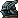

- 00:00:29AtomBu:
- 00:00:45鑲金又包贏 (dryiugevk):
- 00:01:04石虎虎虎 (shihu6799):
- 00:01:13AtomBu:
- 00:01:20石虎虎虎 (shihu6799):
- 00:01:24石虎虎虎 (shihu6799):
- 00:01:48暖寶寶 (nuanbabe):
- 00:02:04石虎虎虎 (shihu6799):
- 00:02:05凱斯林 (keith_lin_):
- 00:02:07凱斯林 (keith_lin_):
- 00:02:54石虎虎虎 (shihu6799):
- 00:03:13石虎虎虎 (shihu6799):
- 00:03:33老派作風 (ganyouman):
- 00:03:39祝實況主身心健康的水蜜桃 (aquariust_t):
- 00:03:41老派作風 (ganyouman):
- 00:03:57石虎虎虎 (shihu6799):
- 00:04:23石虎虎虎 (shihu6799):
- 00:04:38hjy690803:
- 00:04:41石虎虎虎 (shihu6799):
- 00:05:21遊戲小虎 (gametora):
- 00:06:09遊戲小虎 (gametora):
- 00:06:19tar00nijima:
- 00:06:36無敵回鍋肉 (gg_five):
- 00:06:40豬王帝 (alan81wang):
- 00:06:41小浣熊洛斯可 (fjm_aw):
- 00:06:42姬瑪娛樂る巧婷 (love2089885201314):
- 00:07:50凱瑟妮爆舞ひな寶 (karta2164480):
- 00:07:57姬瑪娛樂る巧婷 (love2089885201314):
- 00:08:37tar00nijima:
- 00:09:04姬瑪娛樂る巧婷 (love2089885201314):
- 00:09:04StreamElements:
- 00:09:43tar00nijima:
- 00:09:57姬瑪娛樂る巧婷 (love2089885201314):
- 00:11:31食夢貘 (grasonchance):
- 00:11:40tar00nijima:
- 00:11:58巨倫 (ryu5a19):
- 00:12:10遊戲小虎 (gametora):
- 00:12:15無敵回鍋肉 (gg_five):
- 00:12:22遊戲小虎 (gametora):
- 00:12:29豬王帝 (alan81wang):
- 00:12:48姬瑪娛樂る巧婷 (love2089885201314):
- 00:13:08無敵回鍋肉 (gg_five):
- 00:13:16tar00nijima:
- 00:13:18遊戲小虎 (gametora):
- 00:13:22姬瑪娛樂る巧婷 (love2089885201314):
- 00:13:22StreamElements:
- 00:13:32遊戲小虎 (gametora):
- 00:14:03無敵回鍋肉 (gg_five):
- 00:14:10食夢貘 (grasonchance):
- 00:14:33banana_0207:
- 00:14:35食夢貘 (grasonchance):
- 00:14:36遊戲小虎 (gametora):
- 00:14:47Hynix:
- 00:15:07遊戲小虎 (gametora):
- 00:15:21momoco0619:
- 00:15:33姬瑪娛樂る巧婷 (love2089885201314):
- 00:15:33StreamElements:
- 00:15:36tar00nijima:
- 00:16:02Hynix:
- 00:16:30石虎虎虎 (shihu6799):
- 00:16:42板橋小胖 (sofat1234):
- 00:16:42無敵回鍋肉 (gg_five):
- 00:16:55Hynix:
- 00:17:15無敵回鍋肉 (gg_five):
- 00:18:05Hynix:
- 00:18:42tar00nijima:
- 00:18:43Hynix:
- 00:18:51メルボルン (brisbanecity):
- 00:18:59無敵回鍋肉 (gg_five):
- 00:19:54姬瑪娛樂る巧婷 (love2089885201314):
- 00:20:20メルボルン (brisbanecity):
- 00:20:22tar00nijima:
- 00:21:07無敵回鍋肉 (gg_five):
- 00:21:16小浣熊洛斯可 (fjm_aw):
- 00:21:22關關綸 (guanguanlunn):
- 00:22:02Hynix:
- 00:22:33メルボルン (brisbanecity):
- 00:22:40老派作風 (ganyouman):
- 00:22:46姬瑪娛樂る巧婷 (love2089885201314):
- 00:23:03老派作風 (ganyouman):
- 00:23:18Hynix:
- 00:23:23tar00nijima:
- 00:23:27老派作風 (ganyouman):
- 00:23:44momoco0619:
- 00:23:53老派作風 (ganyouman):
- 00:24:06無敵回鍋肉 (gg_five):
- 00:24:06老派作風 (ganyouman):
- 00:24:18メルボルン (brisbanecity):
- 00:24:22momoco0619:
- 00:24:29無敵回鍋肉 (gg_five):
- 00:24:40banana_0207:
- 00:25:03banana_0207:
- 00:25:06momoco0619:
- 00:25:07老派作風 (ganyouman):
- 00:25:10banana_0207:
- 00:25:13Cordeo:
- 00:25:24Hynix:
- 00:25:32banana_0207:
- 00:25:39無敵回鍋肉 (gg_five):
- 00:25:54exfree34:
- 00:26:01メルボルン (brisbanecity):
- 00:26:24banana_0207:
- 00:26:29momoco0619:
- 00:26:41無敵回鍋肉 (gg_five):
- 00:27:04exfree34:
- 00:27:07老派作風 (ganyouman):
- 00:27:39無敵回鍋肉 (gg_five):
- 00:28:07老派作風 (ganyouman):
- 00:28:10無敵回鍋肉 (gg_five):
- 00:28:12老派作風 (ganyouman):
- 00:28:52老派作風 (ganyouman):
- 00:29:12老派作風 (ganyouman):
- 00:29:42老派作風 (ganyouman):
- 00:29:55老派作風 (ganyouman):
- 00:31:46豬王帝 (alan81wang):
- 00:31:50無敵回鍋肉 (gg_five):
- 00:32:15凱瑟妮爆舞ひな寶 (karta2164480):
- 00:32:55Hynix:
- 00:33:02無敵回鍋肉 (gg_five):
- 00:33:15Hynix:
- 00:33:15tar00nijima:
- 00:33:52StreamElements:
- 00:34:26AtomBu:
- 00:34:42tar00nijima:
- 00:34:50花美丸 (bijoulolz):
- 00:34:58豬王帝 (alan81wang):
- 00:35:04banana_0207:
- 00:35:11tar00nijima:
- 00:35:16說來話長_ (fri935):
- 00:35:52豬王帝 (alan81wang):
- 00:37:15無敵回鍋肉 (gg_five):
- 00:37:23說來話長_ (fri935):
- 00:37:31無敵回鍋肉 (gg_five):
- 00:37:38ily223311:
- 00:37:46豬王帝 (alan81wang):
- 00:38:52祝實況主身心健康的水蜜桃 (aquariust_t):
- 00:39:14一起學貓叫 (5050fiftyfifty):
- 00:39:15花美丸 (bijoulolz):
- 00:39:16ily223311:
- 00:39:17tar00nijima:
- 00:39:23花美丸 (bijoulolz):
- 00:40:32AtomBu:
- 00:42:02祝實況主身心健康的水蜜桃 (aquariust_t):
- 00:44:36花美丸 (bijoulolz):
- 00:44:54無敵回鍋肉 (gg_five):
- 00:46:59大雪茄 (tchjim):
- 00:47:10小浣熊洛斯可 (fjm_aw):
- 00:48:07花蓮 (f22220808):
- 00:48:49大雪茄 (tchjim):
- 00:49:25說來話長_ (fri935):
- 00:51:37思微特 (seira0715):
- 00:52:47小浣熊洛斯可 (fjm_aw):
- 00:53:25花蓮 (f22220808):
- 00:53:40花蓮 (f22220808):
- 00:53:46花蓮 (f22220808):
- 00:53:52StreamElements:
- 00:54:05花蓮 (f22220808):
- 00:54:15花蓮 (f22220808):
- 00:54:39banana_0207:
- 00:54:42花蓮 (f22220808):
- 00:54:45dadiusaii:
- 00:55:03祝實況主身心健康的水蜜桃 (aquariust_t):
- 00:55:05花蓮 (f22220808):
- 00:55:11說來話長_ (fri935):
- 00:55:58說來話長_ (fri935):
- 00:56:04banana_0207:
- 00:56:24釜山大媽恩地 (eunji033185):
- 00:56:43釜山大媽恩地 (eunji033185):
- 00:58:27基隆阿翰 (fish6145):
- 00:58:59嘉麟 (jialin9855):
- 01:00:31yang2456:
- 01:01:46無敵回鍋肉 (gg_five):
- 01:02:27無敵回鍋肉 (gg_five):
- 01:02:30花美丸 (bijoulolz):
- 01:02:36無敵回鍋肉 (gg_five):
- 01:02:39早晨容易伯 (widhe4823):
- 01:02:42花美丸 (bijoulolz):
- 01:02:47花美丸 (bijoulolz):
- 01:02:49說來話長_ (fri935):
- 01:03:02yang2456:
- 01:03:40無敵回鍋肉 (gg_five):
- 01:04:23yang2456:
- 01:04:51無敵回鍋肉 (gg_five):
- 01:10:58豬王帝 (alan81wang):
- 01:11:14凱斯林 (keith_lin_):
- 01:11:16凱斯林 (keith_lin_):
- 01:12:20關關綸 (guanguanlunn):
- 01:16:47豬王帝 (alan81wang):
- 01:17:18無敵回鍋肉 (gg_five):
- 01:17:19企鵝阿倫倫 (mdc1200):
- 01:17:26飛虎文傑 (sone777):
- 01:17:35小小尼歐 (lofetchen):
- 01:18:33凱瑟妮爆舞ひな寶 (karta2164480):
- 01:18:36無敵回鍋肉 (gg_five):
- 01:18:36關關綸 (guanguanlunn):
- 01:20:02凱瑟妮爆舞ひな寶 (karta2164480):
- 01:20:04小小尼歐 (lofetchen):
- 01:21:20tar00nijima:
- 01:21:20小小尼歐 (lofetchen):
- 01:22:04無敵回鍋肉 (gg_five):
- 01:22:30關關綸 (guanguanlunn):
- 01:23:58小小尼歐 (lofetchen):
- 01:24:56關關綸 (guanguanlunn):
- 01:25:02momoco0619:
- 01:25:07davli77:
- 01:25:39關關綸 (guanguanlunn):
- 01:26:07無敵回鍋肉 (gg_five):
- 01:26:23早晨容易伯 (widhe4823):
- 01:26:41豬王帝 (alan81wang):
- 01:26:54早晨容易伯 (widhe4823):
- 01:27:03早晨容易伯 (widhe4823):
- 01:27:07ArcSaber_11:
- 01:27:17早晨容易伯 (widhe4823):
- 01:27:17豬王帝 (alan81wang):
- 01:27:21ArcSaber_11:
- 01:27:27Hynix:
- 01:28:00豬王帝 (alan81wang):
- 01:28:04ArcSaber_11:
- 01:28:41ArcSaber_11:
- 01:28:48Hynix:
- 01:29:01早晨容易伯 (widhe4823):
- 01:29:03早晨容易伯 (widhe4823):
- 01:29:33Hynix:
- 01:31:20ArcSaber_11:
- 01:32:07無敵回鍋肉 (gg_five):
- 01:32:52Hynix:
- 01:32:55早晨容易伯 (widhe4823):
- 01:33:02momoco0619:
- 01:33:46小小尼歐 (lofetchen):
- 01:33:52StreamElements:
- 01:33:57豬王帝 (alan81wang):
- 01:34:23momoco0619:
- 01:34:25ArcSaber_11:
- 01:34:47momoco0619:
- 01:34:56小小尼歐 (lofetchen):
- 01:35:13momoco0619:
- 01:35:25Hynix:
- 01:35:41我是阿志 (tyson520):
- 01:37:09jimmyshaun100:
- 01:37:40無敵回鍋肉 (gg_five):
- 01:37:52StreamElements:
- 01:38:14豬王帝 (alan81wang):
- 01:38:50Jeff0615lolz:
- 01:38:53momoco0619:
- 01:39:00無敵回鍋肉 (gg_five):
- 01:39:10Jeff0615lolz:
- 01:39:46Jeff0615lolz:
- 01:39:48ArcSaber_11:
- 01:40:13無敵回鍋肉 (gg_five):
- 01:40:32Jeff0615lolz:
- 01:40:40小小尼歐 (lofetchen):
- 01:43:48hjy690803:
- 01:44:01小臣 (chenkuen2016):
- 01:44:06關關綸 (guanguanlunn):
- 01:44:15豬王帝 (alan81wang):
- 01:44:17小小尼歐 (lofetchen):
- 01:44:17小臣 (chenkuen2016):
- 01:44:20hjy690803:
- 01:44:34豬王帝 (alan81wang):
- 01:45:05豬王帝 (alan81wang):
- 01:45:43景嵐 (app1238):
- 01:45:49豬王帝 (alan81wang):
- 01:46:09Kimi54:
- 01:48:15小浣熊洛斯可 (fjm_aw):
- 01:48:17無敵回鍋肉 (gg_five):
- 01:49:24無敵回鍋肉 (gg_five):
- 01:50:04木木大大 (dadadadalin):
- 01:50:29豬王帝 (alan81wang):
- 01:50:31木木大大 (dadadadalin):
- 01:50:37木木大大 (dadadadalin):
- 01:50:41豬王帝 (alan81wang):
- 01:50:46momoco0619:
- 01:50:58banana_0207:
- 01:51:42momoco0619:
- 01:51:49momoco0619:
- 01:51:50豬王帝 (alan81wang):
- 01:52:03不好意思_ (4070_super):
- 01:52:17小小尼歐 (lofetchen):
- 01:52:36hjy690803:
- 01:52:41豬王帝 (alan81wang):
- 01:52:44張東熙 (dirtythings):
- 01:53:12banana_0207:
- 01:53:17hjy690803:
- 01:53:39Kimi54:
- 01:53:47豬王帝 (alan81wang):
- 01:53:52StreamElements:
- 01:54:13張東熙 (dirtythings):
- 01:54:32不好意思_ (4070_super):
- 01:54:37不好意思_ (4070_super):
- 01:55:02無敵回鍋肉 (gg_five):
- 01:55:11豬王帝 (alan81wang):
- 01:55:19神父馬丁路德 (souderjojo):
- 01:55:21banana_0207:
- 01:55:26無敵回鍋肉 (gg_five):
- 01:55:28神父馬丁路德 (souderjojo):
- 01:55:49無敵回鍋肉 (gg_five):
- 01:56:04不好意思_ (4070_super):
- 01:56:11搖滾火腿 (rockinghamm):
- 01:56:13不好意思_ (4070_super):
- 01:56:14神父馬丁路德 (souderjojo):
- 01:56:58無敵回鍋肉 (gg_five):
- 01:57:48搖滾火腿 (rockinghamm):
- 01:58:02豬王帝 (alan81wang):
- 01:58:45搖滾火腿 (rockinghamm):
- 01:59:14豬王帝 (alan81wang):
- 01:59:41搖滾火腿 (rockinghamm):
- 02:00:15無敵回鍋肉 (gg_five):
- 02:01:11豬王帝 (alan81wang):
- 02:01:42無敵回鍋肉 (gg_five):
- 02:01:44Kimi54:
- 02:01:49Kimi54:
- 02:02:03hjy690803:
- 02:02:32搖滾火腿 (rockinghamm):
- 02:03:42豬王帝 (alan81wang):
- 02:03:52fatezero2016:
- 02:03:57Jeff0615lolz:
- 02:03:57不好意思_ (4070_super):
- 02:04:03Jeff0615lolz:
- 02:04:37Jeff0615lolz:
- 02:05:43無敵回鍋肉 (gg_five):
- 02:05:53安平椰子哥 (poptyzx):
- 02:06:01祝實況主身心健康的水蜜桃 (aquariust_t):
- 02:06:17長香菇的吐司 (badkin12345):
- 02:06:29メルボルン (brisbanecity):
- 02:06:38安平椰子哥 (poptyzx):
- 02:06:51無敵回鍋肉 (gg_five):
- 02:06:54長香菇的吐司 (badkin12345):
- 02:07:00無敵回鍋肉 (gg_five):
- 02:07:15長香菇的吐司 (badkin12345):
- 02:07:22長香菇的吐司 (badkin12345):
- 02:07:24豬王帝 (alan81wang):
- 02:07:40dadiusaii:
- 02:07:50豬王帝 (alan81wang):
- 02:08:27長香菇的吐司 (badkin12345):
- 02:08:33小小尼歐 (lofetchen):
- 02:08:38壞糖果 (candybad):
- 02:08:41髑髏 (zxc464069):
- 02:08:43髑髏 (zxc464069):
- 02:08:59exfree34:
- 02:09:32搖滾火腿 (rockinghamm):
- 02:09:34exfree34:
- 02:09:36豬王帝 (alan81wang):
- 02:10:05無敵回鍋肉 (gg_five):
- 02:10:12dadiusaii:
- 02:10:12exfree34:
- 02:10:40tar00nijima:
- 02:10:47無敵回鍋肉 (gg_five):
- 02:10:58長香菇的吐司 (badkin12345):
- 02:10:58小小尼歐 (lofetchen):
- 02:11:03長香菇的吐司 (badkin12345):
- 02:11:13tar00nijima:
- 02:11:18長香菇的吐司 (badkin12345):
- 02:11:23長香菇的吐司 (badkin12345):
- 02:11:28豬王帝 (alan81wang):
- 02:11:34exfree34:
- 02:11:59無敵回鍋肉 (gg_five):
- 02:12:09張東熙 (dirtythings):
- 02:12:27豬王帝 (alan81wang):
- 02:12:34張東熙 (dirtythings):
- 02:12:36無敵回鍋肉 (gg_five):
- 02:12:38tar00nijima:
- 02:12:46山田先生001 (andyleungg):
- 02:12:49tar00nijima:
- 02:12:52StreamElements:
- 02:13:04小小尼歐 (lofetchen):
- 02:13:25張東熙 (dirtythings):
- 02:13:40無敵回鍋肉 (gg_five):
- 02:13:48tar00nijima:
- 02:13:52StreamElements:
- 02:14:25Hynix:
- 02:14:31dadiusaii:
- 02:14:36kyonyuusuki:
- 02:16:39lawrence10223:
- 02:16:46小小尼歐 (lofetchen):
- 02:16:51搖滾火腿 (rockinghamm):
- 02:17:12小浣熊洛斯可 (fjm_aw):
- 02:17:27小小尼歐 (lofetchen):
- 02:17:38kyonyuusuki:
- 02:17:39祥倪_ (abc81602):
- 02:17:44搖滾火腿 (rockinghamm):
- 02:17:59小小尼歐 (lofetchen):
- 02:21:04搖滾火腿 (rockinghamm):
- 02:21:59搖滾火腿 (rockinghamm):
- 02:22:16無敵回鍋肉 (gg_five):
- 02:23:12無敵回鍋肉 (gg_five):
- 02:24:51長香菇的吐司 (badkin12345):
- 02:25:06祥倪_ (abc81602):
- 02:25:26張東熙 (dirtythings):
- 02:25:27樂天女孩外表好看 (885620):
- 02:25:33アーチェ (ytyhcdrl):
- 02:26:10搖滾火腿 (rockinghamm):
- 02:26:11祥倪_ (abc81602):
- 02:27:55不好意思_ (4070_super):
- 02:27:56諾斯_ (b26875345):
- 02:28:21不好意思_ (4070_super):
- 02:28:55小臣 (chenkuen2016):
- 02:29:30小臣 (chenkuen2016):
- 02:30:39搖滾火腿 (rockinghamm):
- 02:31:12搖滾火腿 (rockinghamm):
- 02:31:15アーチェ (ytyhcdrl):
- 02:31:39不好意思_ (4070_super):
- 02:32:30張東熙 (dirtythings):
- 02:32:32Hynix:
- 02:32:36壞糖果 (candybad):
- 02:32:44長香菇的吐司 (badkin12345):
- 02:32:49不好意思_ (4070_super):
- 02:33:15搖滾火腿 (rockinghamm):
- 02:33:19睡意有道 (jimsoso):
- 02:33:22諾斯_ (b26875345):
- 02:33:25不好意思_ (4070_super):
- 02:33:52StreamElements:
- 02:34:09凍巧巧 (jelly_qiao_):
- 02:34:20アーチェ (ytyhcdrl):
- 02:34:27不好意思_ (4070_super):
- 02:34:43壞糖果 (candybad):
- 02:34:44張東熙 (dirtythings):
- 02:34:54凍巧巧 (jelly_qiao_):
- 02:35:34アーチェ (ytyhcdrl):
- 02:35:49アーチェ (ytyhcdrl):
- 02:35:54張東熙 (dirtythings):
- 02:36:41アーチェ (ytyhcdrl):
- 02:37:06不好意思_ (4070_super):
- 02:37:10アーチェ (ytyhcdrl):
- 02:37:15豬王帝 (alan81wang):
- 02:38:06アーチェ (ytyhcdrl):
- 02:38:42小浣熊洛斯可 (fjm_aw):
- 02:38:45不好意思_ (4070_super):
- 02:38:50無敵回鍋肉 (gg_five):
- 02:39:30アーチェ (ytyhcdrl):
- 02:39:34hjy690803:
- 02:39:38石虎虎虎 (shihu6799):
- 02:40:05不好意思_ (4070_super):
- 02:40:56無敵回鍋肉 (gg_five):
- 02:41:05凍巧巧 (jelly_qiao_):
- 02:41:33凍巧巧 (jelly_qiao_):
- 02:41:43凍巧巧 (jelly_qiao_):
- 02:41:45hjy690803:
- 02:42:08凍巧巧 (jelly_qiao_):
- 02:42:19鑲金又包贏 (dryiugevk):
- 02:42:21凍巧巧 (jelly_qiao_):
- 02:42:57凍巧巧 (jelly_qiao_):
- 02:42:58凱斯林 (keith_lin_):
- 02:43:02鑲金又包贏 (dryiugevk):
- 02:43:26hjy690803:
- 02:44:36凱斯林 (keith_lin_):
- 02:44:43豬王帝 (alan81wang):
- 02:44:57凍巧巧 (jelly_qiao_):
- 02:45:33豬王帝 (alan81wang):
- 02:47:01凍巧巧 (jelly_qiao_):
- 02:47:18豬王帝 (alan81wang):
- 02:47:38凍巧巧 (jelly_qiao_):
- 02:47:52StreamElements:
- 02:48:08早晨容易伯 (widhe4823):
- 02:48:34早晨容易伯 (widhe4823):
- 02:48:41早晨容易伯 (widhe4823):
- 02:49:04早晨容易伯 (widhe4823):
- 02:49:13Hynix:
- 02:49:56早晨容易伯 (widhe4823):
- 02:51:14遊戲小虎 (gametora):
- 02:51:46hjy690803:
- 02:51:51張東熙 (dirtythings):
- 02:51:52遊戲小虎 (gametora):
- 02:52:02早晨容易伯 (widhe4823):
- 02:52:13早晨容易伯 (widhe4823):
- 02:52:58hjy690803:
- 02:53:52StreamElements:
- 02:55:13無敵回鍋肉 (gg_five):
- 02:55:18品0品 (momopinch):
- 02:55:32無敵回鍋肉 (gg_five):
- 02:56:52早晨容易伯 (widhe4823):
- 02:57:59遊戲小虎 (gametora):
- 02:58:32遊戲小虎 (gametora):
- 02:59:12遊戲小虎 (gametora):
- 02:59:15鑲金又包贏 (dryiugevk):
- 02:59:16jeffhaha1206:
- 02:59:26hjy690803:
- 02:59:37鑲金又包贏 (dryiugevk):
- 02:59:45豬王帝 (alan81wang):
- 02:59:54遊戲小虎 (gametora):
- 03:00:01鑲金又包贏 (dryiugevk):
- 03:00:25hjy690803:
- 03:00:38遊戲小虎 (gametora):
- 03:01:53遊戲小虎 (gametora):
- 03:02:02豬王帝 (alan81wang):
- 03:02:18遊戲小虎 (gametora):
- 03:02:29鑲金又包贏 (dryiugevk):
- 03:02:43無敵回鍋肉 (gg_five):
- 03:02:54遊戲小虎 (gametora):
- 03:04:35遊戲小虎 (gametora):
- 03:05:00氣弘感 (peterlee5678):
- 03:05:27RURUBBY:
- 03:05:32氣弘感 (peterlee5678):
- 03:06:14snowywish:
- 03:06:21氣弘感 (peterlee5678):
- 03:06:29RURUBBY:
- 03:06:31Croco___:
- 03:06:50氣弘感 (peterlee5678):
- 03:06:52RURUBBY:
- 03:07:35RURUBBY:
- 03:08:08香焦牛奶 (fishcloud2017):
- 03:08:14RURUBBY:
- 03:08:46小小尼歐 (lofetchen):
- 03:08:48香焦牛奶 (fishcloud2017):
- 03:08:59RURUBBY:
- 03:09:00香焦牛奶 (fishcloud2017):
- 03:09:03hjy690803:
- 03:09:26香焦牛奶 (fishcloud2017):
- 03:09:30RURUBBY:
- 03:09:33祝實況主身心健康的水蜜桃 (aquariust_t):
- 03:09:56RURUBBY:
- 03:10:21小小尼歐 (lofetchen):
- 03:10:27小浣熊洛斯可 (fjm_aw):
- 03:10:32小浣熊洛斯可 (fjm_aw):
- 03:10:35RURUBBY:
- 03:11:07蘆洲池昌旭 (kase8985052):
- 03:11:12RURUBBY:
- 03:11:20RURUBBY:
- 03:11:24香焦牛奶 (fishcloud2017):
- 03:11:29早晨容易伯 (widhe4823):
- 03:11:36早晨容易伯 (widhe4823):
- 03:11:41hjy690803:
- 03:12:01RURUBBY:
- 03:13:04祝實況主身心健康的水蜜桃 (aquariust_t):
- 03:13:32祝實況主身心健康的水蜜桃 (aquariust_t):
- 03:13:52StreamElements:
- 03:14:22hjy690803:
- 03:15:02exfree34:
- 03:15:17祝實況主身心健康的水蜜桃 (aquariust_t):
- 03:16:05香焦牛奶 (fishcloud2017):
- 03:16:05StreamElements:
- 03:16:09豬王帝 (alan81wang):
- 03:17:13exfree34:
- 03:17:21張東熙 (dirtythings):
- 03:18:52ok339:
- 03:20:32豬王帝 (alan81wang):
- 03:20:42香焦牛奶 (fishcloud2017):
- 03:20:51姜太公釣魚願者上鉤 (samsam2582):
- 03:20:55姜太公釣魚願者上鉤 (samsam2582):
- 03:21:07豬王帝 (alan81wang):
- 03:21:11姜太公釣魚願者上鉤 (samsam2582):
- 03:21:16Hynix:
- 03:21:19good123123888:
- 03:21:30香焦牛奶 (fishcloud2017):
- 03:22:12ok339:
- 03:22:16小浣熊洛斯可 (fjm_aw):
- 03:22:52StreamElements:
- 03:24:21secret_collector:
- 03:25:31enson1022:
- 03:26:58secret_collector:
- 03:27:03jjininder0525:
- 03:28:19早晨容易伯 (widhe4823):
- 03:28:21secret_collector:
- 03:28:38secret_collector:
- 03:29:56secret_collector:
- 03:29:57卡門凱斯 (carmen_kass):
- 03:30:10good123123888:
- 03:30:17凍巧巧 (jelly_qiao_):
- 03:31:01RURUBBY:
- 03:31:04secret_collector:
- 03:31:04早晨容易伯 (widhe4823):
- 03:31:17卡門凱斯 (carmen_kass):
- 03:31:41奇諾比奧魯魯 (blulue54):
- 03:32:17早晨容易伯 (widhe4823):
- 03:32:18secret_collector:
- 03:32:42奇諾比奧魯魯 (blulue54):
- 03:32:56secret_collector:
- 03:33:19卡門凱斯 (carmen_kass):
- 03:33:34早晨容易伯 (widhe4823):
- 03:33:44無敵回鍋肉 (gg_five):
- 03:33:45jjininder0525:
- 03:33:47ok339:
- 03:33:52StreamElements:
- 03:33:55奇諾比奧魯魯 (blulue54):
- 03:34:24早晨容易伯 (widhe4823):
- 03:34:46卡門凱斯 (carmen_kass):
- 03:35:07無敵回鍋肉 (gg_five):
- 03:35:37卡門凱斯 (carmen_kass):
- 03:35:43奇諾比奧魯魯 (blulue54):
- 03:35:53奇諾比奧魯魯 (blulue54):
- 03:36:13卡門凱斯 (carmen_kass):
- 03:36:18jjininder0525:
- 03:36:52卡門凱斯 (carmen_kass):
- 03:36:56無敵回鍋肉 (gg_five):
- 03:37:01奇諾比奧魯魯 (blulue54):
- 03:37:02張東熙 (dirtythings):
- 03:37:17jjininder0525:
- 03:37:58無敵回鍋肉 (gg_five):
- 03:37:58早晨容易伯 (widhe4823):
- 03:38:46凱斯林 (keith_lin_):
- 03:38:58無敵回鍋肉 (gg_five):
- 03:39:55凱斯林 (keith_lin_):
- 03:39:57凱斯林 (keith_lin_):
- 03:40:04凱斯林 (keith_lin_):
- 03:40:32豬王帝 (alan81wang):
- 03:40:32無敵回鍋肉 (gg_five):
- 03:40:43ok339:
- 03:40:51品0品 (momopinch):
- 03:40:52ok339:
- 03:41:13豬王帝 (alan81wang):
- 03:41:16豬王帝 (alan81wang):
- 03:41:19小浣熊洛斯可 (fjm_aw):
- 03:41:20早晨容易伯 (widhe4823):
- 03:41:44卡門凱斯 (carmen_kass):
- 03:41:58凱斯林 (keith_lin_):
- 03:43:30豬王帝 (alan81wang):
- 03:46:53凱斯林 (keith_lin_):
- 03:48:19豬王帝 (alan81wang):
- 03:51:10阿堯堯 (ah_yaoyao):
- 03:52:11阿堯堯 (ah_yaoyao):
- 03:52:46阿堯堯 (ah_yaoyao):
- 03:52:49RURUBBY:
- 03:52:51不好意思_ (4070_super):
- 03:53:41RURUBBY:
- 03:53:52StreamElements:
- 03:53:54RURUBBY:
- 03:54:00石虎虎虎 (shihu6799):
- 03:54:02ok339:
- 03:54:09RURUBBY:
- 03:54:20ok339:
- 03:54:22阿堯堯 (ah_yaoyao):
- 03:54:34石虎虎虎 (shihu6799):
- 03:54:39ok339:
- 03:54:50RURUBBY:
- 03:54:53說來話長_ (fri935):
- 03:55:09RURUBBY:
- 03:55:43扁壽龍宗郎 (deermoon0616):
- 03:56:09石虎虎虎 (shihu6799):
- 03:56:32小小尼歐 (lofetchen):
- 03:56:51石虎虎虎 (shihu6799):
- 03:57:16RURUBBY:
- 03:57:22石虎虎虎 (shihu6799):
- 03:57:31早晨容易伯 (widhe4823):
- 03:57:31RURUBBY:
- 03:57:41無敵回鍋肉 (gg_five):
- 03:57:52StreamElements:
- 03:57:53香焦牛奶 (fishcloud2017):
- 03:57:53石虎虎虎 (shihu6799):
- 03:58:10小小尼歐 (lofetchen):
- 03:58:17無敵回鍋肉 (gg_five):
- 03:58:29石虎虎虎 (shihu6799):
- 03:58:40阿堯堯 (ah_yaoyao):
- 03:58:52石虎虎虎 (shihu6799):
- 03:58:58香焦牛奶 (fishcloud2017):
- 03:59:05ok339:
- 03:59:37小小尼歐 (lofetchen):
- 03:59:38石虎虎虎 (shihu6799):
- 04:00:03RURUBBY:
- 04:00:18石虎虎虎 (shihu6799):
- 04:00:29說來話長_ (fri935):
- 04:00:33石虎虎虎 (shihu6799):
- 04:00:34阿堯堯 (ah_yaoyao):
- 04:00:34RURUBBY:
- 04:00:36石虎虎虎 (shihu6799):
- 04:00:47小小尼歐 (lofetchen):
- 04:00:48說來話長_ (fri935):
- 04:00:53無敵回鍋肉 (gg_five):
- 04:01:03RURUBBY:
- 04:01:11說來話長_ (fri935):
- 04:01:16無敵回鍋肉 (gg_five):
- 04:01:16RURUBBY:
- 04:01:17hihikoko:
- 04:01:20芊芊 (kilin_9916_):
- 04:01:21張東熙 (dirtythings):
- 04:01:32豬王帝 (alan81wang):
- 04:01:35小小尼歐 (lofetchen):
- 04:01:37早晨容易伯 (widhe4823):
- 04:01:37石虎虎虎 (shihu6799):
- 04:01:37RURUBBY:
- 04:01:42張東熙 (dirtythings):
- 04:01:44阿堯堯 (ah_yaoyao):
- 04:01:48張東熙 (dirtythings):
- 04:02:00hjy690803:
- 04:02:07張東熙 (dirtythings):
- 04:02:11ok339:
- 04:02:12hihikoko:
- 04:02:25無敵回鍋肉 (gg_five):
- 04:02:25RURUBBY:
- 04:02:26rRrRrG:
- 04:02:34RURUBBY:
- 04:02:48RURUBBY:
- 04:03:04小小尼歐 (lofetchen):
- 04:03:05不好意思_ (4070_super):
- 04:03:06張東熙 (dirtythings):
- 04:03:15無敵回鍋肉 (gg_five):
- 04:03:55無敵回鍋肉 (gg_five):
- 04:03:58石虎虎虎 (shihu6799):
- 04:04:06小小尼歐 (lofetchen):
- 04:05:44扁壽龍宗郎 (deermoon0616):
- 04:07:54無敵回鍋肉 (gg_five):
- 04:08:39exfree34:
- 04:09:04exfree34:
- 04:09:22hjy690803:
- 04:10:01氣弘感 (peterlee5678):
- 04:10:35氣弘感 (peterlee5678):
- 04:10:46hjy690803:
- 04:11:21hjy690803:
- 04:11:37hjy690803:
- 04:11:57hjy690803:
- 04:12:06無敵回鍋肉 (gg_five):
- 04:12:14氣弘感 (peterlee5678):
- 04:12:23hjy690803:
- 04:13:10氣弘感 (peterlee5678):
- 04:13:52StreamElements:
- 04:14:23關關綸 (guanguanlunn):
- 04:14:31關關綸 (guanguanlunn):
- 04:15:57無敵回鍋肉 (gg_five):
- 04:17:17無敵回鍋肉 (gg_five):
- 04:19:00hihikoko:
- 04:21:33RURUBBY:
- 04:21:56我是泡我很泡 (bubbleowo):
- 04:22:04我是泡我很泡 (bubbleowo):
- 04:22:07豬王帝 (alan81wang):
- 04:22:16說來話長_ (fri935):
- 04:22:18關關綸 (guanguanlunn):
- 04:23:06小小尼歐 (lofetchen):
- 04:23:43阿北沒選上台灣會完蛋 (keeppromise2024):
- 04:23:56RURUBBY:
- 04:24:24無敵回鍋肉 (gg_five):
- 04:24:24ok339:
- 04:24:29RURUBBY:
- 04:24:36品0品 (momopinch):
- 04:24:38一起學貓叫 (5050fiftyfifty):
- 04:24:56無敵回鍋肉 (gg_five):
- 04:25:01說來話長_ (fri935):
- 04:25:07RURUBBY:
- 04:25:34RURUBBY:
- 04:25:55說來話長_ (fri935):
- 04:26:17豬王帝 (alan81wang):
- 04:26:34RURUBBY:
- 04:26:46ok339:
- 04:26:55凱瑟妮爆舞ひな寶 (karta2164480):
- 04:27:00RURUBBY:
- 04:27:04a49912213:
- 04:27:11RURUBBY:
- 04:27:12豬王帝 (alan81wang):
- 04:27:29氣弘感 (peterlee5678):
- 04:27:36豬王帝 (alan81wang):
- 04:27:58豬王帝 (alan81wang):
- 04:28:33氣弘感 (peterlee5678):
- 04:30:00石虎虎虎 (shihu6799):
- 04:30:19石虎虎虎 (shihu6799):
- 04:31:06氣弘感 (peterlee5678):
- 04:31:09石虎虎虎 (shihu6799):
- 04:31:51石虎虎虎 (shihu6799):
- 04:32:49怕跑步开灯 (papaobkd):
- 04:32:52StreamElements:
- 04:33:03RURUBBY:
- 04:33:08RURUBBY:
- 04:33:35RURUBBY:
- 04:33:36石虎虎虎 (shihu6799):
- 04:33:52StreamElements:
- 04:34:00hihikoko:
- 04:34:00StreamElements:
- 04:34:01RURUBBY:
- 04:34:11ok339:
- 04:34:32RURUBBY:
- 04:35:15RURUBBY:
- 04:35:16蘆洲池昌旭 (kase8985052):
- 04:35:19品0品 (momopinch):
- 04:35:34品0品 (momopinch):
- 04:35:58豬王帝 (alan81wang):
- 04:37:05RURUBBY:
- 04:38:04RURUBBY:
- 04:38:26氣弘感 (peterlee5678):
- 04:39:05RURUBBY:
- 04:39:09木木大大 (dadadadalin):
- 04:39:15說來話長_ (fri935):
- 04:39:19RURUBBY:
- 04:39:44豬王帝 (alan81wang):
- 04:39:51石虎虎虎 (shihu6799):
- 04:40:10諾斯_ (b26875345):
- 04:40:11無敵回鍋肉 (gg_five):
- 04:40:33hihikoko:
- 04:40:47RURUBBY:
- 04:40:47思曼 (smallshlolz):
- 04:41:19RURUBBY:
- 04:41:40RURUBBY:
- 04:41:49RURUBBY:
- 04:42:11RURUBBY:
- 04:42:31lawrence10223:
- 04:42:39RURUBBY:
- 04:42:45RURUBBY:
- 04:43:02說來話長_ (fri935):
- 04:43:05RURUBBY:
- 04:43:15石虎虎虎 (shihu6799):
- 04:43:39RURUBBY:
- 04:44:08說來話長_ (fri935):
- 04:44:27GRIFONES5:
- 04:45:01氣弘感 (peterlee5678):
- 04:46:10石虎虎虎 (shihu6799):
- 04:46:56豬王帝 (alan81wang):
- 04:47:18石虎虎虎 (shihu6799):
- 04:49:16祝實況主身心健康的水蜜桃 (aquariust_t):
- 04:49:21祝實況主身心健康的水蜜桃 (aquariust_t):
- 04:50:09祝實況主身心健康的水蜜桃 (aquariust_t):
- 04:51:49清心福全 (chingshin1996):
- 04:52:50清心福全 (chingshin1996):
- 04:53:21清心福全 (chingshin1996):
- 04:53:24清心福全 (chingshin1996):
- 04:53:24Walls90711:
- 04:53:38清心福全 (chingshin1996):
- 04:53:52StreamElements:
- 04:54:08貓是我 (victor0933):
- 04:54:27清心福全 (chingshin1996):
- 04:54:31清心福全 (chingshin1996):
- 04:54:32豬王帝 (alan81wang):
- 04:55:01清心福全 (chingshin1996):
- 04:55:37ok339:
- 04:56:20雷夢家的長頸鹿 (iiiemongiraffe):
- 04:56:41RURUBBY:
- 04:57:06祝實況主身心健康的水蜜桃 (aquariust_t):
- 04:57:06lawrence10223:
- 04:57:19清心福全 (chingshin1996):
- 04:57:31凱斯林 (keith_lin_):
- 04:57:37貓是我 (victor0933):
- 04:58:37凱斯林 (keith_lin_):
- 05:01:05氣弘感 (peterlee5678):
- 05:01:08豬王帝 (alan81wang):
- 05:01:36祝實況主身心健康的水蜜桃 (aquariust_t):
- 05:01:37Walls90711:
- 05:01:38貓是我 (victor0933):
- 05:03:21ok339:
- 05:04:49Walls90711:
- 05:04:50薯條玉米濃湯 (wst1117):
- 05:04:50StreamElements:
- 05:05:36薯條玉米濃湯 (wst1117):
- 05:06:47無敵回鍋肉 (gg_five):
- 05:07:04ok339:
- 05:07:26貓是我 (victor0933):
- 05:07:52StreamElements:
- 05:08:11清心福全 (chingshin1996):
- 05:08:34rontw:
- 05:08:57lawrence10223:
- 05:09:19lawrence10223:
- 05:09:29貓是我 (victor0933):
- 05:10:08品0品 (momopinch):
- 05:10:30諾斯_ (b26875345):
- 05:11:52小浣熊洛斯可 (fjm_aw):
- 05:11:55猛牛青龍展 (cyber427gpx):
- 05:11:58豬王帝 (alan81wang):
- 05:11:59貓是我 (victor0933):
- 05:12:06諾斯_ (b26875345):
- 05:12:07lawrence10223:
- 05:12:19豬王帝 (alan81wang):
- 05:13:52StreamElements:
- 05:13:58ok339:
- 05:14:44ok339:
- 05:14:52ok339:
- 05:15:16ok339:
- 05:15:56說來話長_ (fri935):
- 05:16:17a49912213:
- 05:16:27猛牛青龍展 (cyber427gpx):
- 05:17:11ok339:
- 05:17:30猛牛青龍展 (cyber427gpx):
- 05:17:51一居欸 (egaiyoshi):
- 05:18:53ok339:
- 05:19:01說來話長_ (fri935):
- 05:19:03一居欸 (egaiyoshi):
- 05:20:50ok339:
- 05:21:06說來話長_ (fri935):
- 05:21:19一居欸 (egaiyoshi):
- 05:21:36品0品 (momopinch):
- 05:22:11ok339:
- 05:22:28飛虎文傑 (sone777):
- 05:22:36ok339:
- 05:22:40說來話長_ (fri935):
- 05:22:51一居欸 (egaiyoshi):
- 05:22:58小肚臍 (quoi3oi):
- 05:22:58ok339:
- 05:22:58說來話長_ (fri935):
- 05:22:59一居欸 (egaiyoshi):
- 05:23:05飛虎文傑 (sone777):
- 05:23:13祝實況主身心健康的水蜜桃 (aquariust_t):
- 05:23:16祝實況主身心健康的水蜜桃 (aquariust_t):
- 05:23:25猛牛青龍展 (cyber427gpx):
- 05:23:33祝實況主身心健康的水蜜桃 (aquariust_t):
- 05:23:35小肚臍 (quoi3oi):
- 05:23:35hjy690803:
- 05:23:37說來話長_ (fri935):
- 05:23:38一居欸 (egaiyoshi):
- 05:23:50ok339:
- 05:24:00飛虎文傑 (sone777):
- 05:24:13小小尼歐 (lofetchen):
- 05:24:45飛虎文傑 (sone777):
- 05:24:49一居欸 (egaiyoshi):
- 05:24:52說來話長_ (fri935):
- 05:24:58一居欸 (egaiyoshi):
- 05:25:02祝實況主身心健康的水蜜桃 (aquariust_t):
- 05:25:03hjy690803:
- 05:25:09豬王帝 (alan81wang):
- 05:25:13ok339:
- 05:25:15說來話長_ (fri935):
- 05:25:16飛虎文傑 (sone777):
- 05:25:26一居欸 (egaiyoshi):
- 05:25:27yonesonnnn:
- 05:25:27祝實況主身心健康的水蜜桃 (aquariust_t):
- 05:25:28lawrence10223:
- 05:25:28ok339:
- 05:25:30貓是我 (victor0933):
- 05:25:31豬王帝 (alan81wang):
- 05:25:35說來話長_ (fri935):
- 05:25:36飛虎文傑 (sone777):
- 05:25:50飛虎文傑 (sone777):
- 05:26:08ok339:
- 05:26:17一居欸 (egaiyoshi):
- 05:26:21lawrence10223:
- 05:26:25說來話長_ (fri935):
- 05:26:45一居欸 (egaiyoshi):
- 05:26:48諾斯_ (b26875345):
- 05:26:57貓是我 (victor0933):
- 05:27:04蘆洲池昌旭 (kase8985052):
- 05:27:07說來話長_ (fri935):
- 05:27:07samsunny:
- 05:27:14張東熙 (dirtythings):
- 05:27:17張東熙 (dirtythings):
- 05:27:34芊芊 (kilin_9916_):
- 05:27:46飛虎文傑 (sone777):
- 05:27:50lawrence10223:
- 05:27:52ok339:
- 05:28:19rontw:
- 05:28:27豬王帝 (alan81wang):
- 05:28:32無敵回鍋肉 (gg_five):
- 05:28:42貓是我 (victor0933):
- 05:28:44豬王帝 (alan81wang):
- 05:28:59貓是我 (victor0933):
- 05:29:47ok339:
- 05:31:08無敵回鍋肉 (gg_five):
- 05:31:21雷夢家的長頸鹿 (iiiemongiraffe):
- 05:31:30ok339:
- 05:31:40雷夢家的長頸鹿 (iiiemongiraffe):
- 05:31:57lawrence10223:
- 05:32:46雷夢家的長頸鹿 (iiiemongiraffe):
- 05:33:12雷夢家的長頸鹿 (iiiemongiraffe):
- 05:33:31無敵回鍋肉 (gg_five):
- 05:33:52StreamElements:
- 05:34:14ok339:
- 05:37:01hgjck:
- 05:37:02無敵回鍋肉 (gg_five):
- 05:37:06無敵回鍋肉 (gg_five):
- 05:37:22hgjck:
- 05:37:23豬王帝 (alan81wang):
- 05:38:02hgjck:
- 05:38:20豬王帝 (alan81wang):
- 05:38:35張東熙 (dirtythings):
- 05:39:15木木大大 (dadadadalin):
- 05:39:15ok339:
- 05:39:24ok339:
- 05:39:37hjy690803:
- 05:39:49豬王帝 (alan81wang):
- 05:39:58木木大大 (dadadadalin):
- 05:40:51張東熙 (dirtythings):
- 05:40:58祝實況主身心健康的水蜜桃 (aquariust_t):
- 05:41:04hgjck:
- 05:41:16豬王帝 (alan81wang):
- 05:41:20ok339:
- 05:41:32張東熙 (dirtythings):
- 05:41:50說來話長_ (fri935):
- 05:42:03豬王帝 (alan81wang):
- 05:42:52StreamElements:
- 05:43:58豬王帝 (alan81wang):
- 05:45:04無敵回鍋肉 (gg_five):
- 05:45:42無敵回鍋肉 (gg_five):
- 05:47:56Yaocheng_1218:
- 05:48:15Yaocheng_1218:
- 05:48:28Yaocheng_1218:
- 05:49:05Yaocheng_1218:
- 05:49:12Yaocheng_1218:
- 05:49:27Yaocheng_1218:
- 05:49:29hgjck:
- 05:49:57Yaocheng_1218:
- 05:50:06Yaocheng_1218:
- 05:50:27Yaocheng_1218:
- 05:50:33Yaocheng_1218:
- 05:50:38Yaocheng_1218:
- 05:50:39石虎虎虎 (shihu6799):
- 05:50:40Yaocheng_1218:
- 05:50:40石虎虎虎 (shihu6799):
- 05:50:46Yaocheng_1218:
- 05:51:14Yaocheng_1218:
- 05:51:38Yaocheng_1218:
- 05:51:51Yaocheng_1218:
- 05:51:58石虎虎虎 (shihu6799):
- 05:52:07清心福全 (chingshin1996):
- 05:52:08Yaocheng_1218:
- 05:52:30Yaocheng_1218:
- 05:52:31Yaocheng_1218:
- 05:52:55Yaocheng_1218:
- 05:53:15Yaocheng_1218:
- 05:53:39豬王帝 (alan81wang):
- 05:53:52StreamElements:
- 05:53:52無敵回鍋肉 (gg_five):
- 05:53:53Yaocheng_1218:
- 05:54:08Yaocheng_1218:
- 05:54:18Yaocheng_1218:
- 05:54:23Yaocheng_1218:
- 05:54:42小小尼歐 (lofetchen):
- 05:54:44張東熙 (dirtythings):
- 05:55:14Yaocheng_1218:
- 05:56:19Yaocheng_1218:
- 05:56:21Yaocheng_1218:
- 05:56:34石虎虎虎 (shihu6799):
- 05:56:41品0品 (momopinch):
- 05:56:45石虎虎虎 (shihu6799):
- 05:56:50張東熙 (dirtythings):
- 05:56:54石虎虎虎 (shihu6799):
- 05:56:55c224488:
- 05:57:09Yaocheng_1218:
- 05:57:10品0品 (momopinch):
- 05:57:13張東熙 (dirtythings):
- 05:57:16c224488:
- 05:57:26祝實況主身心健康的水蜜桃 (aquariust_t):
- 05:57:29石虎虎虎 (shihu6799):
- 05:57:29Yaocheng_1218:
- 05:57:30c224488:
- 05:57:34張東熙 (dirtythings):
- 05:57:52張東熙 (dirtythings):
- 05:58:11Yaocheng_1218:
- 05:58:17Yaocheng_1218:
- 05:58:41豬王帝 (alan81wang):
- 05:58:45張東熙 (dirtythings):
- 05:58:48豬王帝 (alan81wang):
- 05:59:10品0品 (momopinch):
- 05:59:11c224488:
- 05:59:27無敵回鍋肉 (gg_five):
- 05:59:29品0品 (momopinch):
- 06:00:01豬王帝 (alan81wang):
- 06:00:01清心福全 (chingshin1996):
- 06:00:12石虎虎虎 (shihu6799):
- 06:00:26張東熙 (dirtythings):
- 06:00:30張東熙 (dirtythings):
- 06:01:37Yaocheng_1218:
- 06:01:41Yaocheng_1218:
- 06:02:09c224488:
- 06:02:21反香菜的暈船仔 (jbike):
- 06:02:25張東熙 (dirtythings):
- 06:02:43Yaocheng_1218:
- 06:02:52祝實況主身心健康的水蜜桃 (aquariust_t):
- 06:03:31c224488:
- 06:03:34Yaocheng_1218:
- 06:03:46反香菜的暈船仔 (jbike):
- 06:03:53石虎虎虎 (shihu6799):
- 06:03:57反香菜的暈船仔 (jbike):
- 06:04:18Yaocheng_1218:
- 06:04:24c224488:
- 06:04:53反香菜的暈船仔 (jbike):
- 06:05:10Yaocheng_1218:
- 06:05:13反香菜的暈船仔 (jbike):
- 06:05:14凱斯林 (keith_lin_):
- 06:05:18豬王帝 (alan81wang):
- 06:05:19Yaocheng_1218:
- 06:05:26凱斯林 (keith_lin_):
- 06:05:26石虎虎虎 (shihu6799):
- 06:05:27凱斯林 (keith_lin_):
- 06:06:03反香菜的暈船仔 (jbike):
- 06:06:10反香菜的暈船仔 (jbike):
- 06:06:14石虎虎虎 (shihu6799):
- 06:06:35c224488:
- 06:06:37Yaocheng_1218:
- 06:06:42石虎虎虎 (shihu6799):
- 06:07:00石虎虎虎 (shihu6799):
- 06:07:03Yaocheng_1218:
- 06:07:22Yaocheng_1218:
- 06:07:25凱斯林 (keith_lin_):
- 06:08:28凱斯林 (keith_lin_):
- 06:09:06Yaocheng_1218:
- 06:09:28Yaocheng_1218:
- 06:09:43Yaocheng_1218:
- 06:10:58Yaocheng_1218:
- 06:11:20無敵回鍋肉 (gg_five):
- 06:11:38無敵回鍋肉 (gg_five):
- 06:12:34c224488:
- 06:12:37c224488:
- 06:13:04凱斯林 (keith_lin_):
- 06:13:24Yaocheng_1218:
- 06:13:46無敵回鍋肉 (gg_five):
- 06:13:52StreamElements:
- 06:14:18一居欸 (egaiyoshi):
- 06:14:22Yaocheng_1218:
- 06:14:22品0品 (momopinch):
- 06:14:22cvcv6666:
- 06:14:28一居欸 (egaiyoshi):
- 06:14:33一居欸 (egaiyoshi):
- 06:14:34Yaocheng_1218:
- 06:14:39ok339:
- 06:14:49一居欸 (egaiyoshi):
- 06:14:49品0品 (momopinch):
- 06:15:15Yaocheng_1218:
- 06:15:25Yaocheng_1218:
- 06:16:26Yaocheng_1218:
- 06:16:29Yaocheng_1218:
- 06:16:58Yaocheng_1218:
- 06:17:52StreamElements:
- 06:18:11芊芊 (kilin_9916_):
- 06:18:11StreamElements:
- 06:18:17Yaocheng_1218:
- 06:19:02Yaocheng_1218:
- 06:19:37Yaocheng_1218:
- 06:19:50Yaocheng_1218:
- 06:19:52Yaocheng_1218:
- 06:20:26芊芊 (kilin_9916_):
- 06:20:26芊芊 (kilin_9916_):
- 06:20:26芊芊 (kilin_9916_):
- 06:20:26芊芊 (kilin_9916_):
- 06:20:26芊芊 (kilin_9916_):
- 06:20:26StreamElements:
- 06:20:26StreamElements:
- 06:20:26StreamElements:
- 06:20:26StreamElements:
- 06:20:26StreamElements:
- 06:20:26StreamElements:
- 06:20:26StreamElements:
- 06:20:26StreamElements:
- 06:20:26StreamElements:
- 06:20:26StreamElements:
- 06:20:32香焦牛奶 (fishcloud2017):
- 06:20:35品0品 (momopinch):
- 06:20:38飛虎文傑 (sone777):
- 06:20:46品0品 (momopinch):
- 06:20:53香焦牛奶 (fishcloud2017):
- 06:21:04品0品 (momopinch):
- 06:21:12hihikoko:
- 06:21:14ok339:
- 06:21:16木木大大 (dadadadalin):
- 06:21:22木木大大 (dadadadalin):
- 06:21:27飛虎文傑 (sone777):
- 06:21:35老叔紀實 (anderson1109):
- 06:21:48Yaocheng_1218:
- 06:21:58品0品 (momopinch):
- 06:22:13samsunny:
- 06:22:32Yaocheng_1218:
- 06:23:11Yaocheng_1218:
- 06:23:19samsunny:
- 06:23:20Yaocheng_1218:
- 06:23:25祝實況主身心健康的水蜜桃 (aquariust_t):
- 06:24:03Yaocheng_1218:
- 06:24:23rontw:
- 06:24:24StreamElements:
- 06:24:34香焦牛奶 (fishcloud2017):
- 06:25:08hjy690803:
- 06:25:16rRrRrG:
- 06:25:29good123123888:
- 06:26:21石虎虎虎 (shihu6799):
- 06:29:56RURUBBY:
- 06:30:41小浣熊洛斯可 (fjm_aw):
- 06:30:41StreamElements:
- 06:30:59蘆洲池昌旭 (kase8985052):
- 06:32:34RURUBBY:
- 06:32:49hihikoko:
- 06:33:51石虎虎虎 (shihu6799):
- 06:33:52StreamElements:
- 06:34:35石虎虎虎 (shihu6799):
- 06:37:35清心福全 (chingshin1996):
- 06:40:14石虎虎虎 (shihu6799):
- 06:41:41祝實況主身心健康的水蜜桃 (aquariust_t):
- 06:41:44祝實況主身心健康的水蜜桃 (aquariust_t):
- 06:41:56小小尼歐 (lofetchen):
- 06:43:40小小尼歐 (lofetchen):
- 06:43:49石虎虎虎 (shihu6799):
- 06:43:50xwei:
- 06:44:04石虎虎虎 (shihu6799):
- 06:44:15無敵回鍋肉 (gg_five):
- 06:44:56小小尼歐 (lofetchen):
- 06:45:38小小尼歐 (lofetchen):
- 06:45:48石虎虎虎 (shihu6799):
- 06:45:54石虎虎虎 (shihu6799):
- 06:46:09rRrRrG:
- 06:46:34小小尼歐 (lofetchen):
- 06:47:10石虎虎虎 (shihu6799):
- 06:47:18石虎虎虎 (shihu6799):
- 06:48:35小小尼歐 (lofetchen):
- 06:49:07rRrRrG:
- 06:49:17rRrRrG:
- 06:49:53小小尼歐 (lofetchen):
- 06:49:53說來話長_ (fri935):
- 06:50:43小小尼歐 (lofetchen):
- 06:51:55rRrRrG:
- 06:52:52StreamElements:
- 06:53:35小小尼歐 (lofetchen):
- 06:53:47小小尼歐 (lofetchen):
- 06:53:52StreamElements:
- 06:54:08思曼 (smallshlolz):
- 06:54:38說來話長_ (fri935):
- 06:54:46周影 (twzerogg):
- 06:55:15說來話長_ (fri935):
- 06:57:46凱斯林 (keith_lin_):
- 06:58:44凱斯林 (keith_lin_):
- 07:00:30凱斯林 (keith_lin_):
- 07:00:34凱斯林 (keith_lin_):
- 07:00:50說來話長_ (fri935):
- 07:01:07凱斯林 (keith_lin_):
- 07:02:04說來話長_ (fri935):
- 07:03:19板橋小胖 (sofat1234):
- 07:03:44c224488:
- 07:03:51思曼 (smallshlolz):
- 07:05:17清心福全 (chingshin1996):
- 07:05:20清心福全 (chingshin1996):
- 07:05:21清心福全 (chingshin1996):
- 07:05:30清心福全 (chingshin1996):
- 07:05:38思曼 (smallshlolz):
- 07:05:41思曼 (smallshlolz):
- 07:05:43清心福全 (chingshin1996):
- 07:05:48清心福全 (chingshin1996):
- 07:06:05清心福全 (chingshin1996):
- 07:06:57清心福全 (chingshin1996):
- 07:07:17無敵回鍋肉 (gg_five):
- 07:07:27清心福全 (chingshin1996):
- 07:07:29清心福全 (chingshin1996):
- 07:07:57思曼 (smallshlolz):
- 07:08:09思曼 (smallshlolz):
- 07:08:18揚了你的骨灰 (dabby1101):
- 07:08:35清心福全 (chingshin1996):
- 07:08:40思曼 (smallshlolz):
- 07:08:55清心福全 (chingshin1996):
- 07:08:59清心福全 (chingshin1996):
- 07:09:06清心福全 (chingshin1996):
- 07:09:21清心福全 (chingshin1996):
- 07:09:27清心福全 (chingshin1996):
- 07:09:30清心福全 (chingshin1996):
- 07:09:30豬王帝 (alan81wang):
- 07:09:34思曼 (smallshlolz):
- 07:09:41卡門凱斯 (carmen_kass):
- 07:09:44思曼 (smallshlolz):
- 07:10:14思曼 (smallshlolz):
- 07:10:29無敵回鍋肉 (gg_five):
- 07:10:39思曼 (smallshlolz):
- 07:10:43卡門凱斯 (carmen_kass):
- 07:11:05思曼 (smallshlolz):
- 07:11:16思曼 (smallshlolz):
- 07:11:44清心福全 (chingshin1996):
- 07:11:51早晨容易伯 (widhe4823):
- 07:11:57思曼 (smallshlolz):
- 07:12:03無敵回鍋肉 (gg_five):
- 07:12:22早晨容易伯 (widhe4823):
- 07:12:30清心福全 (chingshin1996):
- 07:13:14早晨容易伯 (widhe4823):
- 07:13:22清心福全 (chingshin1996):
- 07:13:30小貓様 (cat32630):
- 07:13:52StreamElements:
- 07:14:20卡門凱斯 (carmen_kass):
- 07:14:26豬王帝 (alan81wang):
- 07:15:40清心福全 (chingshin1996):
- 07:15:40rRrRrG:
- 07:16:03朱振億 (ge07171):
- 07:16:52清心福全 (chingshin1996):
- 07:17:35卡門凱斯 (carmen_kass):
- 07:18:30思曼 (smallshlolz):
- 07:19:05搖滾火腿 (rockinghamm):
- 07:20:18思曼 (smallshlolz):
- 07:20:53說來話長_ (fri935):
- 07:20:54清心福全 (chingshin1996):
- 07:21:18無敵回鍋肉 (gg_five):
- 07:21:22朱振億 (ge07171):
- 07:21:32無敵回鍋肉 (gg_five):
- 07:21:37小貓様 (cat32630):
- 07:22:04早晨容易伯 (widhe4823):
- 07:22:27朱振億 (ge07171):
- 07:22:29卡門凱斯 (carmen_kass):
- 07:22:41無敵回鍋肉 (gg_five):
- 07:23:14思曼 (smallshlolz):
- 07:23:21思曼 (smallshlolz):
- 07:24:42早晨容易伯 (widhe4823):
- 07:25:30早晨容易伯 (widhe4823):
- 07:25:32Kimi54:
- 07:25:44石虎虎虎 (shihu6799):
- 07:26:04Kimi54:
- 07:26:12清心福全 (chingshin1996):
- 07:26:29無敵回鍋肉 (gg_five):
- 07:26:29思曼 (smallshlolz):
- 07:26:31思曼 (smallshlolz):
- 07:26:37思曼 (smallshlolz):
- 07:26:38Kimi54:
- 07:26:45Kimi54:
- 07:27:07Kimi54:
- 07:27:09rRrRrG:
- 07:27:29無敵回鍋肉 (gg_five):
- 07:27:52StreamElements:
- 07:27:55清心福全 (chingshin1996):
- 07:27:56amuMaru:
- 07:28:14無敵回鍋肉 (gg_five):
- 07:28:33清心福全 (chingshin1996):
- 07:28:35小小尼歐 (lofetchen):
- 07:28:43amuMaru:
- 07:28:49早晨容易伯 (widhe4823):
- 07:29:07amuMaru:
- 07:29:16rRrRrG:
- 07:29:54早晨容易伯 (widhe4823):
- 07:29:58無敵回鍋肉 (gg_five):
- 07:30:00小小尼歐 (lofetchen):
- 07:30:23小小尼歐 (lofetchen):
- 07:30:41思曼 (smallshlolz):
- 07:30:53無敵回鍋肉 (gg_five):
- 07:30:54rRrRrG:
- 07:31:02amuMaru:
- 07:31:26exfree34:
- 07:31:56小小尼歐 (lofetchen):
- 07:32:19無敵回鍋肉 (gg_five):
- 07:32:20思曼 (smallshlolz):
- 07:32:22祝實況主身心健康的水蜜桃 (aquariust_t):
- 07:32:26exfree34:
- 07:32:27不好意思_ (4070_super):
- 07:32:29豬王帝 (alan81wang):
- 07:32:29早晨容易伯 (widhe4823):
- 07:32:32睡意有道 (jimsoso):
- 07:32:35思曼 (smallshlolz):
- 07:32:36無敵回鍋肉 (gg_five):
- 07:32:38ok339:
- 07:32:41不好意思_ (4070_super):
- 07:32:45Walls90711:
- 07:32:46小小尼歐 (lofetchen):
- 07:32:54板橋小胖 (sofat1234):
- 07:32:58豬王帝 (alan81wang):
- 07:33:10ok339:
- 07:33:15無敵回鍋肉 (gg_five):
- 07:33:32rRrRrG:
- 07:33:35不好意思_ (4070_super):
- 07:33:48ok339:
- 07:33:51amuMaru:
- 07:33:52StreamElements:
- 07:34:03板橋小胖 (sofat1234):
- 07:34:04祝實況主身心健康的水蜜桃 (aquariust_t):
- 07:34:12清心福全 (chingshin1996):
- 07:34:17小小尼歐 (lofetchen):
- 07:34:20搖滾火腿 (rockinghamm):
- 07:34:26amuMaru:
- 07:34:50ivan12267:
- 07:34:53無敵回鍋肉 (gg_five):
- 07:35:15amuMaru:
- 07:36:26小臣 (chenkuen2016):
- 07:36:26StreamElements:
- 07:37:01SJA_Falcon:
- 07:37:24小臣 (chenkuen2016):
- 07:37:27大家養 (dgiayenne):
- 07:37:55小小尼歐 (lofetchen):
- 07:38:18凱瑟妮爆舞ひな寶 (karta2164480):
- 07:38:21板橋小胖 (sofat1234):
- 07:38:31ggyy791106:
- 07:38:43無敵回鍋肉 (gg_five):
- 07:38:45搖滾火腿 (rockinghamm):
- 07:38:48小臣 (chenkuen2016):
- 07:38:48StreamElements:
- 07:38:52ggyy791106:
- 07:39:04小瑞啊 (xiaorui007):
- 07:39:05思曼 (smallshlolz):
- 07:39:09板橋小胖 (sofat1234):
- 07:39:15清心福全 (chingshin1996):
- 07:39:27大家養 (dgiayenne):
- 07:39:56長香菇的吐司 (badkin12345):
- 07:40:32不好意思_ (4070_super):
- 07:40:40ggyy791106:
- 07:40:44搖滾火腿 (rockinghamm):
- 07:40:52早晨容易伯 (widhe4823):
- 07:40:53清心福全 (chingshin1996):
- 07:41:11小瑞啊 (xiaorui007):
- 07:41:36長香菇的吐司 (badkin12345):
- 07:41:37StreamElements:
- 07:41:42長香菇的吐司 (badkin12345):
- 07:41:43ok339:
- 07:41:45思曼 (smallshlolz):
- 07:41:45StreamElements:
- 07:41:53ure_157:
- 07:41:59思曼 (smallshlolz):
- 07:42:08搖滾火腿 (rockinghamm):
- 07:42:08SJA_Falcon:
- 07:42:09長香菇的吐司 (badkin12345):
- 07:42:30板橋小胖 (sofat1234):
- 07:42:30長香菇的吐司 (badkin12345):
- 07:42:35tar00nijima:
- 07:42:35StreamElements:
- 07:43:22長香菇的吐司 (badkin12345):
- 07:43:24阿二林 (r2010617):
- 07:43:24ggyy791106:
- 07:43:26板橋小胖 (sofat1234):
- 07:43:31小瑞啊 (xiaorui007):
- 07:43:39ok339:
- 07:43:44長香菇的吐司 (badkin12345):
- 07:44:00思曼 (smallshlolz):
- 07:44:01tar00nijima:
- 07:44:02小瑞啊 (xiaorui007):
- 07:44:04豬王帝 (alan81wang):
- 07:44:04阿二林 (r2010617):
- 07:44:05板橋小胖 (sofat1234):
- 07:44:07小瑞啊 (xiaorui007):
- 07:44:07思曼 (smallshlolz):
- 07:44:08good123123888:
- 07:44:15tar00nijima:
- 07:44:19tar00nijima:
- 07:44:31大家養 (dgiayenne):
- 07:44:31阿二林 (r2010617):
- 07:44:34小瑞啊 (xiaorui007):
- 07:44:36思曼 (smallshlolz):
- 07:44:38tar00nijima:
- 07:44:38朱振億 (ge07171):
- 07:44:42不好意思_ (4070_super):
- 07:44:43思曼 (smallshlolz):
- 07:44:44good123123888:
- 07:44:44Kimi54:
- 07:44:48我是貪玩小雞 (loucaswallen):
- 07:44:50Walls90711:
- 07:45:02tar00nijima:
- 07:45:07早晨容易伯 (widhe4823):
- 07:45:32凍巧巧 (jelly_qiao_):
- 07:45:32StreamElements:
- 07:45:53小瑞啊 (xiaorui007):
- 07:45:57豬王帝 (alan81wang):
- 07:46:11tar00nijima:
- 07:46:14清心福全 (chingshin1996):
- 07:46:39tar00nijima:
- 07:46:41思曼 (smallshlolz):
- 07:46:41阿二林 (r2010617):
- 07:46:42good123123888:
- 07:46:42小瑞啊 (xiaorui007):
- 07:46:43豬王帝 (alan81wang):
- 07:46:44tar00nijima:
- 07:46:47ivan12267:
- 07:46:53banana_0207:
- 07:46:53StreamElements:
- 07:46:58小小尼歐 (lofetchen):
- 07:47:02hihikoko:
- 07:47:11豬王帝 (alan81wang):
- 07:47:12yang2456:
- 07:47:16小瑞啊 (xiaorui007):
- 07:47:17阿二林 (r2010617):
- 07:47:23tar00nijima:
- 07:47:25good123123888:
- 07:47:32banana_0207:
- 07:48:08tar00nijima:
- 07:48:21思曼 (smallshlolz):
- 07:48:40tar00nijima:
- 07:48:52StreamElements:
- 07:49:23蘆洲池昌旭 (kase8985052):
- 07:49:28阿二林 (r2010617):
- 07:50:06阿二林 (r2010617):
- 07:50:17朱振億 (ge07171):
- 07:50:46阿二林 (r2010617):
- 07:50:54ggyy791106:
- 07:50:57朱振億 (ge07171):
- 07:50:58hojho:
- 07:50:59good123123888:
- 07:51:06阿二林 (r2010617):
- 07:51:09朱振億 (ge07171):
- 07:51:49tar00nijima:
- 07:52:11長香菇的吐司 (badkin12345):
- 07:52:26長香菇的吐司 (badkin12345):
- 07:52:36長香菇的吐司 (badkin12345):
- 07:52:44不好意思_ (4070_super):
- 07:52:47朱振億 (ge07171):
- 07:52:48不好意思_ (4070_super):
- 07:52:50阿二林 (r2010617):
- 07:52:51good123123888:
- 07:53:11tar00nijima:
- 07:53:18阿二林 (r2010617):
- 07:53:29長香菇的吐司 (badkin12345):
- 07:53:37長香菇的吐司 (badkin12345):
- 07:53:52StreamElements:
- 07:53:52SJA_Falcon:
- 07:54:12不好意思_ (4070_super):
- 07:54:57搖滾火腿 (rockinghamm):
- 07:55:06小貓様 (cat32630):
- 07:55:32不好意思_ (4070_super):
- 07:56:14石虎虎虎 (shihu6799):
- 07:56:54長香菇的吐司 (badkin12345):
- 07:57:04長香菇的吐司 (badkin12345):
- 07:57:36不好意思_ (4070_super):
- 07:57:47石虎虎虎 (shihu6799):
- 07:58:03長香菇的吐司 (badkin12345):
- 07:58:22小臣 (chenkuen2016):
- 07:58:23StreamElements:
- 07:58:33qoo807:
- 07:58:40石虎虎虎 (shihu6799):
- 07:59:12SJA_Falcon:
- 07:59:25不好意思_ (4070_super):
- 07:59:26石虎虎虎 (shihu6799):
- 07:59:27小貓様 (cat32630):
- 07:59:34ivan12267:
- 07:59:35氣弘感 (peterlee5678):
- 07:59:39石虎虎虎 (shihu6799):
- 07:59:43tar00nijima:
- 07:59:43good123123888:
- 07:59:53石虎虎虎 (shihu6799):
- 07:59:54SJA_Falcon:
- 07:59:59石虎虎虎 (shihu6799):
- 08:00:07氣弘感 (peterlee5678):
- 08:00:07tar00nijima:
- 08:00:07tar00nijima:
- 08:00:07StreamElements:
- 08:00:10SJA_Falcon:
- 08:00:13SJA_Falcon:
- 08:00:15SJA_Falcon:
- 08:00:20SJA_Falcon:
- 08:00:28石虎虎虎 (shihu6799):
- 08:00:31SJA_Falcon:
- 08:00:34石虎虎虎 (shihu6799):
- 08:00:36三畝大叔 (samsamsamsam0001):
- 08:00:36蒂瓜球 (rody999):
- 08:00:40蒂瓜球 (rody999):
- 08:00:55SJA_Falcon:
- 08:01:04蒂瓜球 (rody999):
- 08:01:39三畝大叔 (samsamsamsam0001):
- 08:01:47三畝大叔 (samsamsamsam0001):
- 08:01:50氣弘感 (peterlee5678):
- 08:02:07蘆洲池昌旭 (kase8985052):
- 08:02:18SJA_Falcon:
- 08:02:21氣弘感 (peterlee5678):
- 08:02:23SJA_Falcon:
- 08:02:30SJA_Falcon:
- 08:02:51SJA_Falcon:
- 08:02:52StreamElements:
- 08:03:00SJA_Falcon:
- 08:03:07蘆洲池昌旭 (kase8985052):
- 08:03:11三畝大叔 (samsamsamsam0001):
- 08:03:14SJA_Falcon:
- 08:03:33不好意思_ (4070_super):
- 08:04:12石虎虎虎 (shihu6799):
- 08:04:30煙花酒月 (samuraiben555):
- 08:04:31搖滾火腿 (rockinghamm):
- 08:04:35蘆洲池昌旭 (kase8985052):
- 08:04:37不好意思_ (4070_super):
- 08:04:43蒂瓜球 (rody999):
- 08:04:44tbf_RC:
- 08:04:58思曼 (smallshlolz):
- 08:05:09tbf_RC:
- 08:05:44蒂瓜球 (rody999):
- 08:07:45RURUBBY:
- 08:07:54RURUBBY:
- 08:08:05石虎虎虎 (shihu6799):
- 08:08:29周影 (twzerogg):
- 08:08:46momoco0619:
- 08:08:46三畝大叔 (samsamsamsam0001):
- 08:09:18RURUBBY:
- 08:09:37忘了飛的彼得潘 (stan125black):
- 08:10:09關關綸 (guanguanlunn):
- 08:11:03忘了飛的彼得潘 (stan125black):
- 08:11:17搖滾火腿 (rockinghamm):
- 08:11:28tar00nijima:
- 08:11:31關關綸 (guanguanlunn):
- 08:11:36搖滾火腿 (rockinghamm):
- 08:11:39豬王帝 (alan81wang):
- 08:11:42石虎虎虎 (shihu6799):
- 08:11:43關關綸 (guanguanlunn):
- 08:11:49搖滾火腿 (rockinghamm):
- 08:11:49忘了飛的彼得潘 (stan125black):
- 08:11:51tar00nijima:
- 08:11:53石虎虎虎 (shihu6799):
- 08:11:58思曼 (smallshlolz):
- 08:12:01hihikoko:
- 08:12:02關關綸 (guanguanlunn):
- 08:12:02momoco0619:
- 08:12:03搖滾火腿 (rockinghamm):
- 08:12:09hihikoko:
- 08:12:13SJA_Falcon:
- 08:12:24石虎虎虎 (shihu6799):
- 08:12:25豬王帝 (alan81wang):
- 08:12:39tar00nijima:
- 08:12:42good123123888:
- 08:12:52搖滾火腿 (rockinghamm):
- 08:12:52忘了飛的彼得潘 (stan125black):
- 08:12:54SJA_Falcon:
- 08:13:03關關綸 (guanguanlunn):
- 08:13:06關關綸 (guanguanlunn):
- 08:13:07hihikoko:
- 08:13:10石虎虎虎 (shihu6799):
- 08:13:10關關綸 (guanguanlunn):
- 08:13:32hihikoko:
- 08:13:33tar00nijima:
- 08:13:52StreamElements:
- 08:14:16tar00nijima:
- 08:14:19SJA_Falcon:
- 08:14:23momoco0619:
- 08:14:23kyonyuusuki:
- 08:14:29祝實況主身心健康的水蜜桃 (aquariust_t):
- 08:14:33tar00nijima:
- 08:14:38momoco0619:
- 08:14:49我是泡我很泡 (bubbleowo):
- 08:14:52tar00nijima:
- 08:14:55momoco0619:
- 08:15:19tar00nijima:
- 08:15:28豬王帝 (alan81wang):
- 08:15:31hihikoko:
- 08:15:36tar00nijima:
- 08:15:40石虎虎虎 (shihu6799):
- 08:15:42momoco0619:
- 08:15:53石虎虎虎 (shihu6799):
- 08:15:54tar00nijima:
- 08:16:55tar00nijima:
- 08:18:17關關綸 (guanguanlunn):
- 08:18:23tar00nijima:
- 08:18:27關關綸 (guanguanlunn):
- 08:18:43LordSecretspy:
- 08:18:50三畝大叔 (samsamsamsam0001):
- 08:18:53tar00nijima:
- 08:19:04搖滾火腿 (rockinghamm):
- 08:19:06davli77:
- 08:19:20tar00nijima:
- 08:19:28hihikoko:
- 08:19:28關關綸 (guanguanlunn):
- 08:19:51exfree34:
- 08:19:57長香菇的吐司 (badkin12345):
- 08:20:15exfree34:
- 08:20:34tar00nijima:
- 08:20:39tar00nijima:
- 08:21:27tar00nijima:
- 08:21:36tar00nijima:
- 08:21:39tar00nijima:
- 08:21:42exfree34:
- 08:21:47momoco0619:
- 08:22:06tar00nijima:
- 08:22:17momoco0619:
- 08:22:20朱振億 (ge07171):
- 08:22:37石虎虎虎 (shihu6799):
- 08:23:28SJA_Falcon:
- 08:23:47朱振億 (ge07171):
- 08:24:13davli77:
- 08:24:14豬王帝 (alan81wang):
- 08:24:46朱振億 (ge07171):
- 08:24:57安平椰子哥 (poptyzx):
- 08:26:40搖滾火腿 (rockinghamm):
- 08:27:43SJA_Falcon:
- 08:28:03SJA_Falcon:
- 08:29:23kyonyuusuki:
- 08:29:27石虎虎虎 (shihu6799):
- 08:29:31搖滾火腿 (rockinghamm):
- 08:29:36davli77:
- 08:30:54三畝大叔 (samsamsamsam0001):
- 08:31:11小小尼歐 (lofetchen):
- 08:31:52ivan12267:
- 08:33:52StreamElements:
- 08:34:21石虎虎虎 (shihu6799):
- 08:35:20長香菇的吐司 (badkin12345):
- 08:35:39板橋小胖 (sofat1234):
- 08:35:47davli77:
- 08:35:49蘆洲池昌旭 (kase8985052):
- 08:36:14davli77:
- 08:36:34關關綸 (guanguanlunn):
- 08:36:37蘆洲池昌旭 (kase8985052):
- 08:36:40ok339:
- 08:36:53板橋小胖 (sofat1234):
- 08:37:13品0品 (momopinch):
- 08:37:34品0品 (momopinch):
- 08:37:52StreamElements:
- 08:37:54小貓様 (cat32630):
- 08:38:05長香菇的吐司 (badkin12345):
- 08:38:12SJA_Falcon:
- 08:38:24davli77:
- 08:38:26石虎虎虎 (shihu6799):
- 08:38:32大雪茄 (tchjim):
- 08:39:03三畝大叔 (samsamsamsam0001):
- 08:39:04Walls90711:
- 08:39:10SJA_Falcon:
- 08:39:26蘆洲池昌旭 (kase8985052):
- 08:39:33長香菇的吐司 (badkin12345):
- 08:39:44長香菇的吐司 (badkin12345):
- 08:39:52搖滾火腿 (rockinghamm):
- 08:40:15品0品 (momopinch):
- 08:40:18RURUBBY:
- 08:40:30不好意思_ (4070_super):
- 08:40:37三畝大叔 (samsamsamsam0001):
- 08:40:48RURUBBY:
- 08:40:57RURUBBY:
- 08:41:00RURUBBY:
- 08:41:03周影 (twzerogg):
- 08:41:04RURUBBY:
- 08:41:17RURUBBY:
- 08:41:21三畝大叔 (samsamsamsam0001):
- 08:41:40小小尼歐 (lofetchen):
- 08:42:11周影 (twzerogg):
- 08:42:58davli77:
- 08:43:11三畝大叔 (samsamsamsam0001):
- 08:44:03davli77:
- 08:44:15三畝大叔 (samsamsamsam0001):
- 08:44:46搖滾火腿 (rockinghamm):
- 08:45:00長香菇的吐司 (badkin12345):
- 08:45:09小貓様 (cat32630):
- 08:45:17石虎虎虎 (shihu6799):
- 08:45:18下雨這天好安靜 (tsuijuichung):
- 08:45:40davli77:
- 08:45:51品0品 (momopinch):
- 08:45:55長香菇的吐司 (badkin12345):
- 08:46:11石虎虎虎 (shihu6799):
- 08:46:12長香菇的吐司 (badkin12345):
- 08:46:54長香菇的吐司 (badkin12345):
- 08:47:13davli77:
- 08:47:25長香菇的吐司 (badkin12345):
- 08:47:52豬王帝 (alan81wang):
- 08:48:14不好意思_ (4070_super):
- 08:48:16davli77:
- 08:48:50長香菇的吐司 (badkin12345):
- 08:48:52長香菇的吐司 (badkin12345):
- 08:48:54不好意思_ (4070_super):
- 08:48:55長香菇的吐司 (badkin12345):
- 08:49:08shi90913:
- 08:49:09長香菇的吐司 (badkin12345):
- 08:50:08長香菇的吐司 (badkin12345):
- 08:51:01三畝大叔 (samsamsamsam0001):
- 08:51:02長香菇的吐司 (badkin12345):
- 08:51:26長香菇的吐司 (badkin12345):
- 08:52:11ok339:
- 08:52:32長香菇的吐司 (badkin12345):
- 08:52:36關關綸 (guanguanlunn):
- 08:52:49關關綸 (guanguanlunn):
- 08:53:14davli77:
- 08:53:52StreamElements:
- 08:54:07關關綸 (guanguanlunn):
- 08:54:11davli77:
- 08:54:13關關綸 (guanguanlunn):
- 08:54:14莎也佳 (sayaka2708):
- 08:54:26關關綸 (guanguanlunn):
- 08:54:29davli77:
- 08:54:29pmocchio:
- 08:54:50品0品 (momopinch):
- 08:54:52davli77:
- 08:55:07davli77:
- 08:55:18不好意思_ (4070_super):
- 08:55:22關關綸 (guanguanlunn):
- 08:55:37關關綸 (guanguanlunn):
- 08:55:41不好意思_ (4070_super):
- 08:56:11ok339:
- 08:56:26davli77:
- 08:57:28不好意思_ (4070_super):
- 08:57:41祥倪_ (abc81602):
- 08:57:45pmocchio:
- 08:58:59三畝大叔 (samsamsamsam0001):
- 08:59:00祥倪_ (abc81602):
- 08:59:23小貓様 (cat32630):
- 08:59:44不好意思_ (4070_super):
- 08:59:52祥倪_ (abc81602):
- 08:59:58davli77:
- 09:00:04不好意思_ (4070_super):
- 09:00:52pmocchio:
- 09:01:21小健人 (gginin_0720):
- 09:01:55davli77:
- 09:01:59pmocchio:
- 09:03:18davli77:
- 09:03:30davli77:
- 09:03:58品0品 (momopinch):
- 09:04:31清心福全 (chingshin1996):
- 09:04:47思曼 (smallshlolz):
- 09:05:45davli77:
- 09:05:53思曼 (smallshlolz):
- 09:06:45思曼 (smallshlolz):
- 09:06:56思曼 (smallshlolz):
- 09:08:04ggyy791106:
- 09:08:06壞糖果 (candybad):
- 09:08:07小小尼歐 (lofetchen):
- 09:08:19安平椰子哥 (poptyzx):
- 09:08:20不好意思_ (4070_super):
- 09:08:26小小尼歐 (lofetchen):
- 09:08:35ok339:
- 09:08:38思曼 (smallshlolz):
- 09:08:45寧靜的玥 (gtrock1943):
- 09:09:16小小尼歐 (lofetchen):
- 09:10:10山本五十圓 (o11733):
- 09:10:10思曼 (smallshlolz):
- 09:10:14思曼 (smallshlolz):
- 09:10:46壞糖果 (candybad):
- 09:12:03思曼 (smallshlolz):
- 09:12:07鵬魚宴 (kkbb9966):
- 09:12:30小小尼歐 (lofetchen):
- 09:12:37exfree34:
- 09:12:39關關綸 (guanguanlunn):
- 09:12:46關關綸 (guanguanlunn):
- 09:12:47hjy690803:
- 09:12:52StreamElements:
- 09:13:01清心福全 (chingshin1996):
- 09:13:08思曼 (smallshlolz):
- 09:13:26hjy690803:
- 09:13:29launamiz:
- 09:13:42思曼 (smallshlolz):
- 09:13:52StreamElements:
- 09:13:55思曼 (smallshlolz):
- 09:14:12exfree34:
- 09:14:24exfree34:
- 09:15:09launamiz:
- 09:15:13周影 (twzerogg):
- 09:15:25launamiz:
- 09:15:26周影 (twzerogg):
- 09:15:29關關綸 (guanguanlunn):
- 09:15:37pmocchio:
- 09:15:53ok339:
- 09:15:55b3643791:
- 09:15:56周影 (twzerogg):
- 09:15:56不好意思_ (4070_super):
- 09:15:58寧靜的玥 (gtrock1943):
- 09:16:05寧靜的玥 (gtrock1943):
- 09:16:07ok339:
- 09:16:30tld321:
- 09:20:33寧靜的玥 (gtrock1943):
- 09:20:43思曼 (smallshlolz):
- 09:20:47hjy690803:
- 09:21:24板橋小胖 (sofat1234):
- 09:21:56萬難 (bnm911):
- 09:22:09思曼 (smallshlolz):
- 09:22:21思曼 (smallshlolz):
- 09:23:11launamiz:
- 09:23:41氣弘感 (peterlee5678):
- 09:23:51launamiz:
- 09:24:15launamiz:
- 09:24:34關關綸 (guanguanlunn):
- 09:24:44關關綸 (guanguanlunn):
- 09:25:14launamiz:
- 09:25:51萬難 (bnm911):
- 09:26:22思曼 (smallshlolz):
- 09:26:33澳門魍馬 (s8501382002):
- 09:26:36pmocchio:
- 09:26:50aaal111:
- 09:26:57launamiz:
- 09:27:03小小尼歐 (lofetchen):
- 09:27:22安平椰子哥 (poptyzx):
- 09:28:33祝實況主身心健康的水蜜桃 (aquariust_t):
- 09:28:35good123123888:
- 09:28:37祥倪_ (abc81602):
- 09:28:38小小尼歐 (lofetchen):
- 09:28:40蘆洲池昌旭 (kase8985052):
- 09:28:40hjy690803:
- 09:28:41ok339:
- 09:28:45小臣 (chenkuen2016):
- 09:28:49小臣 (chenkuen2016):
- 09:28:51pmocchio:
- 09:28:52RURUBBY:
- 09:29:14小小尼歐 (lofetchen):
- 09:29:27RURUBBY:
- 09:29:39板橋小胖 (sofat1234):
- 09:29:40wofn39sk:
- 09:30:00思曼 (smallshlolz):
- 09:30:01RURUBBY:
- 09:31:28思曼 (smallshlolz):
- 09:31:30思曼 (smallshlolz):
- 09:31:34思曼 (smallshlolz):
- 09:32:34RURUBBY:
- 09:32:40思曼 (smallshlolz):
- 09:33:01RURUBBY:
- 09:33:12RURUBBY:
- 09:33:24RURUBBY:
- 09:33:37小臣 (chenkuen2016):
- 09:33:49RURUBBY:
- 09:33:52StreamElements:
- 09:34:28wofn39sk:
- 09:34:50RURUBBY:
- 09:35:46祥倪_ (abc81602):
- 09:36:01思曼 (smallshlolz):
- 09:36:06RURUBBY:
- 09:36:21tld321:
- 09:36:24tld321:
- 09:36:33朱振億 (ge07171):
- 09:38:13RURUBBY:
- 09:38:35RURUBBY:
- 09:39:06久保ちゃん大好き (mikeccy0522):
- 09:39:08ivan12267:
- 09:39:14RURUBBY:
- 09:39:39RURUBBY:
- 09:40:03yang2456:
- 09:40:12dadiusaii:
- 09:40:47RURUBBY:
- 09:41:46RURUBBY:
- 09:42:14ccccpppp1234:
- 09:42:29RURUBBY:
- 09:42:37ccccpppp1234:
- 09:42:40dadiusaii:
- 09:42:43ccccpppp1234:
- 09:42:59ccccpppp1234:
- 09:42:59RURUBBY:
- 09:43:19RURUBBY:
- 09:43:22RURUBBY:
- 09:43:24ccccpppp1234:
- 09:43:35launamiz:
- 09:43:40不好意思_ (4070_super):
- 09:43:57launamiz:
- 09:43:59早晨容易伯 (widhe4823):
- 09:44:12RURUBBY:
- 09:44:54launamiz:
- 09:45:23忘了飛的彼得潘 (stan125black):
- 09:46:07kevinjason1:
- 09:46:22關關綸 (guanguanlunn):
- 09:46:31關關綸 (guanguanlunn):
- 09:46:35關關綸 (guanguanlunn):
- 09:46:38關關綸 (guanguanlunn):
- 09:46:48搖滾火腿 (rockinghamm):
- 09:46:52launamiz:
- 09:47:01阿二林 (r2010617):
- 09:47:12搖滾火腿 (rockinghamm):
- 09:47:12板橋小胖 (sofat1234):
- 09:47:18exfree34:
- 09:47:31ccccpppp1234:
- 09:47:52StreamElements:
- 09:48:07ccccpppp1234:
- 09:48:08關關綸 (guanguanlunn):
- 09:48:14搖滾火腿 (rockinghamm):
- 09:48:19關關綸 (guanguanlunn):
- 09:48:41關關綸 (guanguanlunn):
- 09:48:46exfree34:
- 09:49:05launamiz:
- 09:49:20user74123bot:
- 09:49:25ggyy791106:
- 09:49:25忘了飛的彼得潘 (stan125black):
- 09:49:26小貓様 (cat32630):
- 09:49:30小小尼歐 (lofetchen):
- 09:49:34hihikoko:
- 09:49:35忘了飛的彼得潘 (stan125black):
- 09:49:40ok339:
- 09:49:41exfree34:
- 09:49:52小小尼歐 (lofetchen):
- 09:49:52板橋小胖 (sofat1234):
- 09:50:17小小尼歐 (lofetchen):
- 09:50:27ccccpppp1234:
- 09:50:50小臣 (chenkuen2016):
- 09:51:16ccccpppp1234:
- 09:51:17奇諾比奧魯魯 (blulue54):
- 09:51:18ccccpppp1234:
- 09:51:21kevinjason1:
- 09:51:24tld321:
- 09:51:24ccccpppp1234:
- 09:51:35tld321:
- 09:52:00tld321:
- 09:52:04tld321:
- 09:52:27ccccpppp1234:
- 09:52:33ccccpppp1234:
- 09:52:44ccccpppp1234:
- 09:52:51ccccpppp1234:
- 09:53:30kevinjason1:
- 09:53:31小小尼歐 (lofetchen):
- 09:53:52StreamElements:
- 09:54:29RURUBBY:
- 09:54:32tld321:
- 09:54:44tld321:
- 09:54:46exfree34:
- 09:55:07RURUBBY:
- 09:55:10exfree34:
- 09:56:01exfree34:
- 09:56:16阿二林 (r2010617):
- 09:56:18壞糖果 (candybad):
- 09:56:24fatezero2016:
- 09:56:39RURUBBY:
- 09:56:47祥倪_ (abc81602):
- 09:57:47RURUBBY:
- 09:58:07RURUBBY:
- 09:58:11荒奇 (huangqiii):
- 09:58:39RURUBBY:
- 09:58:59安平椰子哥 (poptyzx):
- 09:59:04RURUBBY:
- 09:59:27RURUBBY:
- 09:59:47安平椰子哥 (poptyzx):
- 09:59:47exfree34:
- 10:00:19RURUBBY:
- 10:00:26RURUBBY:
- 10:00:32搖滾火腿 (rockinghamm):
- 10:00:56思曼 (smallshlolz):
- 10:01:19思曼 (smallshlolz):
- 10:01:32ccccpppp1234:
- 10:01:33思曼 (smallshlolz):
- 10:01:39搖滾火腿 (rockinghamm):
- 10:01:49思曼 (smallshlolz):
- 10:02:04ccccpppp1234:
- 10:02:10芊芊 (kilin_9916_):
- 10:02:22思曼 (smallshlolz):
- 10:02:27豬王帝 (alan81wang):
- 10:02:38RURUBBY:
- 10:02:45思曼 (smallshlolz):
- 10:02:50搖滾火腿 (rockinghamm):
- 10:02:51ccccpppp1234:
- 10:02:52思曼 (smallshlolz):
- 10:02:58RURUBBY:
- 10:03:00芊芊 (kilin_9916_):
- 10:03:42RURUBBY:
- 10:04:03搖滾火腿 (rockinghamm):
- 10:04:07思曼 (smallshlolz):
- 10:04:19思曼 (smallshlolz):
- 10:04:19ivan12267:
- 10:04:25ccccpppp1234:
- 10:04:29我愛上班 (cadina888):
- 10:04:30ccccpppp1234:
- 10:04:30ludociel_242:
- 10:04:38kevinjason1:
- 10:05:08思曼 (smallshlolz):
- 10:05:12說來話長_ (fri935):
- 10:05:19搖滾火腿 (rockinghamm):
- 10:05:21祝實況主身心健康的水蜜桃 (aquariust_t):
- 10:05:22思曼 (smallshlolz):
- 10:05:24ccccpppp1234:
- 10:05:34RURUBBY:
- 10:05:43RURUBBY:
- 10:05:45ccccpppp1234:
- 10:06:13ccccpppp1234:
- 10:06:23RURUBBY:
- 10:06:23leoki910:
- 10:06:36ccccpppp1234:
- 10:06:39exfree34:
- 10:06:45搖滾火腿 (rockinghamm):
- 10:07:08芊芊 (kilin_9916_):
- 10:07:47芊芊 (kilin_9916_):
- 10:08:06leoki910:
- 10:09:04cartate:
- 10:09:09芊芊 (kilin_9916_):
- 10:09:13RURUBBY:
- 10:09:33RURUBBY:
- 10:09:49leoki910:
- 10:09:51RURUBBY:
- 10:09:53exfree34:
- 10:10:58RURUBBY:
- 10:11:40leoki910:
- 10:12:07benjamin945:
- 10:12:17小小尼歐 (lofetchen):
- 10:12:41小圻圻 (eoolppe7):
- 10:12:45RURUBBY:
- 10:12:50exfree34:
- 10:12:58小圻圻 (eoolppe7):
- 10:13:02exfree34:
- 10:13:07kara2266:
- 10:13:13RURUBBY:
- 10:13:23芊芊 (kilin_9916_):
- 10:13:52StreamElements:
- 10:14:57凱斯林 (keith_lin_):
- 10:16:08凱斯林 (keith_lin_):
- 10:17:18hihikoko:
- 10:17:40祝實況主身心健康的水蜜桃 (aquariust_t):
- 10:17:46芊芊 (kilin_9916_):
- 10:19:13leoki910:
- 10:19:18一起學貓叫 (5050fiftyfifty):
- 10:19:21不好意思_ (4070_super):
- 10:19:23ccccpppp1234:
- 10:19:24ccccpppp1234:
- 10:19:32不好意思_ (4070_super):
- 10:19:33不好意思_ (4070_super):
- 10:19:36leoki910:
- 10:19:40leoki910:
- 10:20:02ccccpppp1234:
- 10:20:15ccccpppp1234:
- 10:20:19阿二林 (r2010617):
- 10:20:23一居欸 (egaiyoshi):
- 10:20:34忘了飛的彼得潘 (stan125black):
- 10:20:35ccccpppp1234:
- 10:20:42搖滾火腿 (rockinghamm):
- 10:21:29阿二林 (r2010617):
- 10:21:43搖滾火腿 (rockinghamm):
- 10:21:53豬王帝 (alan81wang):
- 10:22:28ccccpppp1234:
- 10:22:51a1a109780978:
- 10:22:52StreamElements:
- 10:22:57阿二林 (r2010617):
- 10:23:01ccccpppp1234:
- 10:23:02忘了飛的彼得潘 (stan125black):
- 10:23:02b3643791:
- 10:23:03ccccpppp1234:
- 10:23:06阿二林 (r2010617):
- 10:23:07芊芊 (kilin_9916_):
- 10:23:13ccccpppp1234:
- 10:23:17dadiusaii:
- 10:23:19祝實況主身心健康的水蜜桃 (aquariust_t):
- 10:23:21ccccpppp1234:
- 10:23:22ccccpppp1234:
- 10:23:24一居欸 (egaiyoshi):
- 10:23:32阿二林 (r2010617):
- 10:23:35a49912213:
- 10:23:57阿二林 (r2010617):
- 10:24:29Yu2Hi0715:
- 10:24:29阿二林 (r2010617):
- 10:24:33kevinjason1:
- 10:24:45一居欸 (egaiyoshi):
- 10:25:05忘了飛的彼得潘 (stan125black):
- 10:25:28davli77:
- 10:25:50阿二林 (r2010617):
- 10:25:52Yu2Hi0715:
- 10:25:53ccccpppp1234:
- 10:26:04一居欸 (egaiyoshi):
- 10:26:07安平椰子哥 (poptyzx):
- 10:26:15davli77:
- 10:26:16dadiusaii:
- 10:26:18ivan12267:
- 10:26:19Yu2Hi0715:
- 10:26:34ccccpppp1234:
- 10:26:35阿二林 (r2010617):
- 10:26:37忘了飛的彼得潘 (stan125black):
- 10:26:41hihikoko:
- 10:26:41一居欸 (egaiyoshi):
- 10:26:48benjamin945:
- 10:27:00a49912213:
- 10:27:12davli77:
- 10:27:17忘了飛的彼得潘 (stan125black):
- 10:27:21benjamin945:
- 10:27:32一居欸 (egaiyoshi):
- 10:27:44一居欸 (egaiyoshi):
- 10:28:31忘了飛的彼得潘 (stan125black):
- 10:28:35hjy690803:
- 10:28:44davli77:
- 10:28:50氣弘感 (peterlee5678):
- 10:28:56氣弘感 (peterlee5678):
- 10:29:44davli77:
- 10:30:09davli77:
- 10:30:14睡意有道 (jimsoso):
- 10:30:41ok339:
- 10:30:48Yu2Hi0715:
- 10:30:49一居欸 (egaiyoshi):
- 10:30:55davli77:
- 10:31:06氣弘感 (peterlee5678):
- 10:31:38周影 (twzerogg):
- 10:31:42一居欸 (egaiyoshi):
- 10:31:47cartate:
- 10:31:48kevin_1006:
- 10:31:53hihikoko:
- 10:32:01good123123888:
- 10:32:06ok339:
- 10:32:06davli77:
- 10:32:12祝實況主身心健康的水蜜桃 (aquariust_t):
- 10:32:13leoki910:
- 10:32:21ivan12267:
- 10:32:21davli77:
- 10:32:44davli77:
- 10:33:43leoki910:
- 10:33:51leoki910:
- 10:33:52StreamElements:
- 10:34:29ok339:
- 10:34:36ok339:
- 10:34:36食夢貘 (grasonchance):
- 10:34:56davli77:
- 10:35:00ok339:
- 10:35:06一居欸 (egaiyoshi):
- 10:35:27davli77:
- 10:36:12davli77:
- 10:36:19hjy690803:
- 10:36:22a49912213:
- 10:36:29小小尼歐 (lofetchen):
- 10:36:31一居欸 (egaiyoshi):
- 10:36:54davli77:
- 10:37:04leoki910:
- 10:37:07不好意思_ (4070_super):
- 10:37:08leoki910:
- 10:37:44davli77:
- 10:37:54benjamin945:
- 10:37:56搖滾火腿 (rockinghamm):
- 10:38:06leoki910:
- 10:38:38davli77:
- 10:38:44一居欸 (egaiyoshi):
- 10:38:59launamiz:
- 10:39:09davli77:
- 10:39:17胖喵喵 (fatcat_tw):
- 10:39:25davli77:
- 10:39:47davli77:
- 10:40:01小貓様 (cat32630):
- 10:40:25launamiz:
- 10:40:31davli77:
- 10:40:41benjamin945:
- 10:40:47benjamin945:
- 10:41:37leoki910:
- 10:42:31leoki910:
- 10:42:34davli77:
- 10:42:35kevin_1006:
- 10:42:45ccccpppp1234:
- 10:42:49搖滾火腿 (rockinghamm):
- 10:42:53hjy690803:
- 10:43:00kevin_1006:
- 10:43:01benjamin945:
- 10:43:15benjamin945:
- 10:43:24a49912213:
- 10:43:27搖滾火腿 (rockinghamm):
- 10:43:32cartate:
- 10:43:34胖喵喵 (fatcat_tw):
- 10:43:40checkmate1925:
- 10:43:49davli77:
- 10:43:58kevin_1006:
- 10:44:00qoo807:
- 10:44:01飛虎文傑 (sone777):
- 10:44:03一居欸 (egaiyoshi):
- 10:44:05阿二林 (r2010617):
- 10:44:15b3643791:
- 10:44:20飛虎文傑 (sone777):
- 10:44:36Rowuko:
- 10:44:39exfree34:
- 10:44:41飛虎文傑 (sone777):
- 10:44:56搖滾火腿 (rockinghamm):
- 10:45:09豬王帝 (alan81wang):
- 10:45:22leoki910:
- 10:45:45benjamin945:
- 10:45:46Rowuko:
- 10:46:08豬王帝 (alan81wang):
- 10:46:15胖喵喵 (fatcat_tw):
- 10:46:20搖滾火腿 (rockinghamm):
- 10:46:20leoki910:
- 10:46:32momoco0619:
- 10:46:35不好意思_ (4070_super):
- 10:46:36ludociel_242:
- 10:46:53checkmate1925:
- 10:46:55a49912213:
- 10:47:03Yu2Hi0715:
- 10:47:04搖滾火腿 (rockinghamm):
- 10:47:07ccccpppp1234:
- 10:47:08Yu2Hi0715:
- 10:47:10ccccpppp1234:
- 10:47:13胖喵喵 (fatcat_tw):
- 10:47:23momoco0619:
- 10:47:45leoki910:
- 10:47:57launamiz:
- 10:48:34launamiz:
- 10:48:41搖滾火腿 (rockinghamm):
- 10:49:15momoco0619:
- 10:49:47Yu2Hi0715:
- 10:49:55Yu2Hi0715:
- 10:50:18胖喵喵 (fatcat_tw):
- 10:50:24Yu2Hi0715:
- 10:50:28Yu2Hi0715:
- 10:50:34leoki910:
- 10:50:57安平椰子哥 (poptyzx):
- 10:51:07搖滾火腿 (rockinghamm):
- 10:51:12安平椰子哥 (poptyzx):
- 10:52:48Yu2Hi0715:
- 10:53:11小小尼歐 (lofetchen):
- 10:53:26kevin_1006:
- 10:53:37yang2456:
- 10:53:41祝實況主身心健康的水蜜桃 (aquariust_t):
- 10:53:42leoki910:
- 10:53:44hjy690803:
- 10:53:52StreamElements:
- 10:54:02小小尼歐 (lofetchen):
- 10:54:08Yu2Hi0715:
- 10:54:51yang2456:
- 10:55:13搖滾火腿 (rockinghamm):
- 10:55:29RURUBBY:
- 10:55:58RURUBBY:
- 10:56:02祝實況主身心健康的水蜜桃 (aquariust_t):
- 10:56:12leoki910:
- 10:56:48RURUBBY:
- 10:57:14benjamin945:
- 10:57:25yang2456:
- 10:57:28leoki910:
- 10:57:29ccccpppp1234:
- 10:57:34leoki910:
- 10:57:52StreamElements:
- 10:58:30小小尼歐 (lofetchen):
- 10:58:45ludociel_242:
- 10:59:01小小尼歐 (lofetchen):
- 10:59:37一居欸 (egaiyoshi):
- 11:00:16Yu2Hi0715:
- 11:00:18RURUBBY:
- 11:00:37凱斯林 (keith_lin_):
- 11:00:38凱斯林 (keith_lin_):
- 11:00:43yang2456:
- 11:01:13搖滾火腿 (rockinghamm):
- 11:02:07yang2456:
- 11:02:25搖滾火腿 (rockinghamm):
- 11:03:24小小尼歐 (lofetchen):
- 11:03:31kevin_1006:
- 11:03:33一居欸 (egaiyoshi):
- 11:03:34豬王帝 (alan81wang):
- 11:03:36checkmate1925:
- 11:03:38ccccpppp1234:
- 11:03:38cablelin0420:
- 11:03:43ccccpppp1234:
- 11:03:43launamiz:
- 11:03:43祝實況主身心健康的水蜜桃 (aquariust_t):
- 11:03:44小貓様 (cat32630):
- 11:03:48benjamin945:
- 11:03:55ccccpppp1234:
- 11:03:55YiCheng1022:
- 11:04:28leoki910:
- 11:04:31YiCheng1022:
- 11:04:36yang2456:
- 11:04:56leoki910:
- 11:07:54leoki910:
- 11:08:20benjamin945:
- 11:08:22搖滾火腿 (rockinghamm):
- 11:09:06搖滾火腿 (rockinghamm):
- 11:09:06小臣 (chenkuen2016):
- 11:09:44姬瑪娛樂る巧婷 (love2089885201314):
- 11:09:55豬王帝 (alan81wang):
- 11:10:01豬王帝 (alan81wang):
- 11:10:04搖滾火腿 (rockinghamm):
- 11:10:07小臣 (chenkuen2016):
- 11:10:29momoco0619:
- 11:10:32搖滾火腿 (rockinghamm):
- 11:10:40小臣 (chenkuen2016):
- 11:10:47ReinhardtAstrea:
- 11:11:03祝實況主身心健康的水蜜桃 (aquariust_t):
- 11:11:03姬瑪娛樂る巧婷 (love2089885201314):
- 11:11:13姬瑪娛樂る巧婷 (love2089885201314):
- 11:11:31ok339:
- 11:12:49ReinhardtAstrea:
- 11:13:23豬王帝 (alan81wang):
- 11:13:33ok339:
- 11:13:48豬王帝 (alan81wang):
- 11:13:52StreamElements:
- 11:14:05豬王帝 (alan81wang):
- 11:14:20Rowuko:
- 11:14:37壞糖果 (candybad):
- 11:15:10ok339:
- 11:15:42ok339:
- 11:15:47ok339:
- 11:15:48Rowuko:
- 11:15:59豬王帝 (alan81wang):
- 11:16:02ok339:
- 11:16:52ok339:
- 11:17:06ok339:
- 11:17:09ok339:
- 11:17:15Rowuko:
- 11:17:16ok339:
- 11:17:29Rowuko:
- 11:18:18搖滾火腿 (rockinghamm):
- 11:19:48豬王帝 (alan81wang):
- 11:20:26澳門魍馬 (s8501382002):
- 11:20:42ok339:
- 11:21:05板橋小胖 (sofat1234):
- 11:21:22三畝大叔 (samsamsamsam0001):
- 11:21:36澳門魍馬 (s8501382002):
- 11:21:59澳門魍馬 (s8501382002):
- 11:22:39sammy98372597:
- 11:23:03sammy98372597:
- 11:23:05豬王帝 (alan81wang):
- 11:23:05sammy98372597:
- 11:23:15豬王帝 (alan81wang):
- 11:24:15豬王帝 (alan81wang):
- 11:25:03豬王帝 (alan81wang):
- 11:25:11豬王帝 (alan81wang):
- 11:25:49搖滾火腿 (rockinghamm):
- 11:25:51benjamin945:
- 11:25:56benjamin945:
- 11:26:09豬王帝 (alan81wang):
- 11:26:18sammy98372597:
- 11:26:18搖滾火腿 (rockinghamm):
- 11:26:19豬王帝 (alan81wang):
- 11:26:56澳門魍馬 (s8501382002):
- 11:26:58sammy98372597:
- 11:27:00搖滾火腿 (rockinghamm):
- 11:27:02姬瑪娛樂る巧婷 (love2089885201314):
- 11:27:18豬王帝 (alan81wang):
- 11:27:39ssffcc5678:
- 11:27:42澳門魍馬 (s8501382002):
- 11:27:49豬王帝 (alan81wang):
- 11:28:21sammy98372597:
- 11:28:27澳門魍馬 (s8501382002):
- 11:28:53momoco0619:
- 11:28:59久保ちゃん大好き (mikeccy0522):
- 11:29:08豬王帝 (alan81wang):
- 11:29:10sammy98372597:
- 11:29:11板橋小胖 (sofat1234):
- 11:29:15checkmate1925:
- 11:29:26sammy98372597:
- 11:29:26豬王帝 (alan81wang):
- 11:29:28momoco0619:
- 11:29:47久保ちゃん大好き (mikeccy0522):
- 11:29:48豬王帝 (alan81wang):
- 11:29:55不好意思_ (4070_super):
- 11:30:02momoco0619:
- 11:30:07豬王帝 (alan81wang):
- 11:30:08氣弘感 (peterlee5678):
- 11:30:12豬王帝 (alan81wang):
- 11:30:25sammy98372597:
- 11:30:27久保ちゃん大好き (mikeccy0522):
- 11:30:37bossdontwalk:
- 11:30:41checkmate1925:
- 11:30:45豬王帝 (alan81wang):
- 11:30:47kevin_1006:
- 11:30:49sammy98372597:
- 11:30:52kevin_1006:
- 11:30:54澳門魍馬 (s8501382002):
- 11:30:59氣弘感 (peterlee5678):
- 11:31:04sammy98372597:
- 11:31:09久保ちゃん大好き (mikeccy0522):
- 11:31:19checkmate1925:
- 11:31:20sammy98372597:
- 11:31:37ssffcc5678:
- 11:31:37viper3690:
- 11:31:40豬王帝 (alan81wang):
- 11:31:42dawar7812:
- 11:31:47kevin_1006:
- 11:31:53sammy98372597:
- 11:31:55kevin_1006:
- 11:31:58荒奇 (huangqiii):
- 11:31:59checkmate1925:
- 11:32:06kevinjason1:
- 11:32:11sammy98372597:
- 11:32:13一居欸 (egaiyoshi):
- 11:32:14久保ちゃん大好き (mikeccy0522):
- 11:32:15kevin_1006:
- 11:32:15sammy98372597:
- 11:32:16阿弦 (rrrxian):
- 11:32:18板橋小胖 (sofat1234):
- 11:32:19cablelin0420:
- 11:32:20dawar7812:
- 11:32:22checkmate1925:
- 11:32:22搖滾火腿 (rockinghamm):
- 11:32:22豬王帝 (alan81wang):
- 11:32:23hrxang:
- 11:32:25芊芊 (kilin_9916_):
- 11:32:27viper3690:
- 11:32:28祝實況主身心健康的水蜜桃 (aquariust_t):
- 11:32:33kyonyuusuki:
- 11:32:43板橋小胖 (sofat1234):
- 11:32:52StreamElements:
- 11:32:55kevin_1006:
- 11:32:57荒奇 (huangqiii):
- 11:32:58momoco0619:
- 11:33:07板橋小胖 (sofat1234):
- 11:33:08搖滾火腿 (rockinghamm):
- 11:33:09sammy98372597:
- 11:33:09hjy690803:
- 11:33:11ok339:
- 11:33:15板橋小胖 (sofat1234):
- 11:33:25checkmate1925:
- 11:33:51momoco0619:
- 11:33:52StreamElements:
- 11:34:07dawar7812:
- 11:34:09豬王帝 (alan81wang):
- 11:34:21checkmate1925:
- 11:34:26ok339:
- 11:34:29搖滾火腿 (rockinghamm):
- 11:34:43cartate:
- 11:34:52sammy98372597:
- 11:34:53kyonyuusuki:
- 11:34:56sammy98372597:
- 11:35:03Kimi54:
- 11:35:05kyonyuusuki:
- 11:35:05小貓様 (cat32630):
- 11:35:13dawar7812:
- 11:35:24kevin_1006:
- 11:35:24一居欸 (egaiyoshi):
- 11:35:24cablelin0420:
- 11:35:33checkmate1925:
- 11:35:35小貓様 (cat32630):
- 11:35:39久保ちゃん大好き (mikeccy0522):
- 11:35:42dawar7812:
- 11:35:44sammy98372597:
- 11:35:45Kimi54:
- 11:35:47祥倪_ (abc81602):
- 11:35:57sammy98372597:
- 11:35:59dawar7812:
- 11:36:02momoco0619:
- 11:36:13Kimi54:
- 11:36:14板橋小胖 (sofat1234):
- 11:36:18sammy98372597:
- 11:36:51yonesonnnn:
- 11:36:52氣弘感 (peterlee5678):
- 11:37:05checkmate1925:
- 11:37:36小臣 (chenkuen2016):
- 11:37:36StreamElements:
- 11:37:42久保ちゃん大好き (mikeccy0522):
- 11:37:53sammy98372597:
- 11:38:23momoco0619:
- 11:38:24澳門魍馬 (s8501382002):
- 11:38:36ok339:
- 11:39:06豬王帝 (alan81wang):
- 11:39:11sammy98372597:
- 11:39:24久保ちゃん大好き (mikeccy0522):
- 11:39:46momoco0619:
- 11:39:59搖滾火腿 (rockinghamm):
- 11:40:14久保ちゃん大好き (mikeccy0522):
- 11:40:18Rowuko:
- 11:40:19豬王帝 (alan81wang):
- 11:40:35momoco0619:
- 11:40:36搖滾火腿 (rockinghamm):
- 11:40:38三畝大叔 (samsamsamsam0001):
- 11:40:59豬王帝 (alan81wang):
- 11:41:08sammy98372597:
- 11:41:15久保ちゃん大好き (mikeccy0522):
- 11:41:26不好意思_ (4070_super):
- 11:41:30momoco0619:
- 11:41:53momoco0619:
- 11:42:45豬王帝 (alan81wang):
- 11:43:38豬王帝 (alan81wang):
- 11:43:49豬王帝 (alan81wang):
- 11:43:53ok339:
- 11:43:54kara2266:
- 11:45:41祝實況主身心健康的水蜜桃 (aquariust_t):
- 11:45:56z2004hume:
- 11:46:02kara2266:
- 11:46:26祝實況主身心健康的水蜜桃 (aquariust_t):
- 11:46:28kevin_1006:
- 11:46:31momoco0619:
- 11:46:32ok339:
- 11:46:36安平椰子哥 (poptyzx):
- 11:46:46RURUBBY:
- 11:46:46sunday013:
- 11:47:03ok339:
- 11:47:03豬王帝 (alan81wang):
- 11:47:10小貓様 (cat32630):
- 11:47:11RURUBBY:
- 11:47:17RURUBBY:
- 11:47:32momoco0619:
- 11:47:34checkmate1925:
- 11:47:34搖滾火腿 (rockinghamm):
- 11:47:47RURUBBY:
- 11:48:08sunday013:
- 11:48:10ok339:
- 11:48:11good123123888:
- 11:48:13睡意有道 (jimsoso):
- 11:48:14豬王帝 (alan81wang):
- 11:48:15RURUBBY:
- 11:48:16搖滾火腿 (rockinghamm):
- 11:48:17cartate:
- 11:48:19sunday013:
- 11:48:24sunday013:
- 11:48:25Nightbot:
- 11:48:26曼秀蕾敦 (zxc914181):
- 11:48:28凱斯林 (keith_lin_):